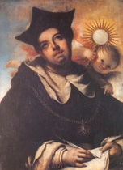
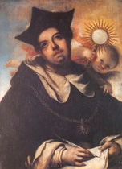

|  |
|---|
Textus a Cyrillo Lambot in "Revue Bénédictine" 1942 editos
recognovit Enrique Alarcón et instruxit


|  |
|---|


[91498] Officium Sacerdos, vesp. 1 antiph. 1 Antiphona. Sacerdos in aeternum Christus dominus secundum ordinem Melchisedech, panem et vinum obtulit.
Cantus contra, Gloria tibi Trinitas, de Trinitate.
[91499] Officium Sacerdos, vesp. 1 ps. 1 Dixit dominus domino meo:
sede a dextris meis
donec ponam inimicos tuos
scabillum pedum tuorum.
Virgam virtutis tuae
emittet dominus ex Sion.
Dominare in medio inimicorum tuorum.
Tecum principium in die virtutis tuae.
In splendoribus sanctorum,
ex utero, ante luciferum, genui te.
Iuravit dominus, et non paenitebit eum:
tu es sacerdos in aeternum
secundum ordinem Melchisedech.
Dominus a dextris tuis.
Confregit in die irae suae reges.
Iudicabit in nationibus.
Implebit cadavera.
Conquassabit capita in terra multorum.
De torrente in via bibet,
propterea exaltabit caput.
[91500] Officium Sacerdos, vesp. 1 antiph. 2 Antiphona. Miserator dominus escam dedit timentibus se in memoriam suorum mirabilium.
Contra, Totus orbis, de sancto Thoma.
[91501] Officium Sacerdos, vesp. 1 ps. 2 Confitebor tibi, domine, in toto corde meo,
in consilio iustorum et congregatione.
Magna opera domini,
exquisita in omnes voluntates eius.
Confessio et magnificentia opus eius,
et iustitia eius manet in saeculum saeculi.
Memoriam fecit mirabilium suorum
misericors et miserator dominus.
Escam dedit timentibus se.
Memor erit in saeculum testamenti sui.
Virtutem operum suorum adnuntiabit populo suo
ut det illis hereditatem gentium.
Opera manuum eius veritas et iudicium.
Fidelia omnia mandata eius,
confirmata in saeculum saeculi,
facta in veritate et aequitate.
Redemptionem misit populo suo.
Mandavit in aeternum testamentum suum.
Sanctum et terribile nomen eius:
initium sapientiae timor domini,
intellectus bonus omnibus facientibus eum.
Laudatio eius manet in saeculum saeculi.
[91502] Officium Sacerdos, vesp. 1 antiph. 3 Antiphona. Calicem salutaris accipiam et sacrificabo hostiam laudis.
Contra, Pudore bono, de sancto Nicholao.
[91503] Officium Sacerdos, vesp. 1 ps. 3 Credidi, propter quod locutus sum:
ego autem humiliatus sum nimis.
Ego dixi in excessu meo:
omnis homo mendax.
Quid retribuam domino
pro omnibus quae retribuit mihi?
Calicem salutaris accipiam,
et nomen domini invocabo.
Vota mea domino reddam
coram omni populo eius.
Pretiosa in conspectu domini
mors sanctorum eius.
O domine, quia ego servus tuus,
ego servus tuus et filius ancillae tuae,
disrupisti vincula mea.
Tibi sacrificabo hostiam laudis,
et in nomine domini invocabo.
Vota mea domino reddam
in conspectu omnis populi eius,
in atriis domus domini,
in medio tui, Hierusalem.
[91504] Officium Sacerdos, vesp. 1 antiph. 4 Antiphona. Sicut novellae olivarum Ecclesiae filii sint in circuitu mensae domini.
Contra, Iuste et sancte vivendo, de sancto Nicholao.
[91505] Officium Sacerdos, vesp. 1 ps. 4 Beati omnes qui timent dominum,
qui ambulant in viis eius.
Labores manuum tuarum, quia manducabis,
beatus es, et bene tibi erit.
Uxor tua sicut vitis abundans
in lateribus domus tuae.
Filii tui sicut novella olivarum
in circuitu mensae tuae.
Ecce sic benedicetur homo
qui timet dominum:
benedicat te dominus ex Sion,
et videas bona Hierusalem
omnibus diebus vitae tuae,
et videas filios filiorum tuorum.
Pax super Israhel.
[91506] Officium Sacerdos, vesp. 1 antiph. 5 Antiphona. Qui pacem ponit fines Ecclesiae frumenti adipe satiat nos dominus.
Contra, Innocenter puerilia iura, de sancto Nicholao.
[91507] Officium Sacerdos, vesp. 1 ps. 5 Lauda, Hierusalem, dominum.
Lauda Deum tuum, Sion,
quoniam confortavit seras portarum tuarum.
Benedixit filiis tuis in te
qui posuit fines tuos pacem,
et adipe frumenti satiat te,
qui emittit eloquium suum terrae.
Velociter currit sermo eius.
Qui dat nivem sicut lanam,
nebulam sicut cinerem spargit,
mittit cristallum suum sicut buccellas:
ante faciem frigoris eius, quis sustinebit?
Emittet verbum suum, et liquefaciet ea.
Flabit spiritus eius, et fluent aquae.
Qui adnuntiat verbum suum Iacob,
iustitias et iudicia sua Israhel,
non fecit taliter omni nationi,
et iudicia sua non manifestavit eis.
[91508] Officium Sacerdos, vesp. 1 cap. 1 Capitulum. Dominus Iesus Christus in qua nocte tradebatur, accepit panem, et gratias agens fregit, et dixit: Accipite et manducate: hoc est corpus meum quod pro vobis tradetur; hoc facite in meam commemorationem.
[91509] Officium Sacerdos, vesp. 1 resp. 1 R/. Homo quidam fecit coenam magnam et misit servum suum hora coenae dicere invitatis ut venirent, quia parata sunt omnia.
V/. Venite, comedite panem meum et bibite vinum meum quod miscui vobis. Quia parata sunt omnia. Gloria patri et filio et spiritui sancto. Quia parata sunt omnia.
Contra, Virgo flagelatur, de sancta Catharina.
[91510] Officium Sacerdos, vesp. 1 hymnus 1Contra, Pange lingua gloriosi praelium certaminis. In Passione domini.
[91511] Officium Sacerdos, vesp. 1 v. 1 V/. Panem de caelo praestitisti eis.
R/. Omne delectamentum suavitatis in se habentem.
[91512] Officium Sacerdos, vesp. 1 antiph. 6 Antiphona ad Magnificat. O quam suavis est, domine, spiritus tuus. Qui ut dulcedinem tuam in filios demonstrares, pane suavissimo de caelo praestito, esurientes reples bonis, fastidiosos divites dimittis inanes.
Contra, O Christi pietas, de sancto Nicholao.
[91513] Officium Sacerdos, vesp. 1 hymnus 2
Magnificat anima mea dominum:
et exultavit spiritus meus in Deo salutari meo.
Quia respexit humilitatem ancillae suae:
ecce enim ex hoc beatam me dicent omnes generationes.
Quia fecit mihi magna qui potens est:
et sanctum nomen eius.
Et misericordia eius a progenie in progenies
timentibus eum.
Fecit potentiam in brachio suo:
dispersit superbos mente cordis sui.
Deposuit potentes de sede,
et exaltavit humiles.
Esurientes implevit bonis:
et divites dimisit inanes.
Suscepit Israel puerum suum,
recordatus misericordiae suae.
Sicut locutus est ad patres nostros,
Abraham et semini eius in saecula.
[91514] Officium Sacerdos, vesp. 1 oratio 1 Oratio. Deus qui nobis sub sacramento mirabili passionis tuae memoriam reliquisti, tribue, quaesumus, ita nos corporis et sanguinis tui sacra mysteria venerari, ut redemptionis tuae fructum in nobis iugiter sentiamus. Qui vivis et regnas cum Deo patre in unitate spiritus sancti Deus per omnia saecula saeculorum. Amen.
[91516] Officium Sacerdos, completorium 1 antiph. 1 Antiphona. Miserere mei, domine, et exaudi orationem meam.
[91517] Officium Sacerdos, completorium 1 ps. 1º Cum invocarem exaudivit me
Deus iustitiae meae.
In tribulatione dilatasti mihi.
Miserere mei et exaudi orationem meam.
Filii hominum, usquequo gravi corde?
Ut quid diligitis vanitatem
et quaeritis mendacium?
Et scitote quoniam mirificavit
dominus sanctum suum.
Dominus exaudiet me cum clamavero ad eum.
Irascimini et nolite peccare.
Quae dicitis in cordibus vestris,
in cubilibus vestris conpungimini.
Sacrificate sacrificium iustitiae,
et sperate in domino.
Multi dicunt: quis ostendet nobis bona?
Signatum est super nos
lumen vultus tui, domine.
Dedisti laetitiam in corde meo.
A fructu frumenti et vini
et olei sui multiplicati sunt.
In pace in id ipsum
dormiam et requiescam,
quoniam tu, domine,
singulariter in spe constituisti me.
[91518] Officium Sacerdos, completorium 1 antiph. 2 Antiphona ad Nunc dimittis. Alleluia, alleluia. Panis quem ego dedero, alleluia. Caro mea est pro mundi vita, alleluia.
[91519] Officium Sacerdos, completorium 1 hymnus 1 Nunc dimittis servum tuum, domine,
secundum verbum tuum in pace:
quia viderunt oculi mei salutare tuum,
quod parasti ante faciem omnium populorum:
lumen ad revelationem gentium,
et gloriam plebis tuae Israel.
[91520] Officium Sacerdos, completorium 1 oratio 1 Oratio. Visita, quaesumus domine, domum istam, et omnes insidias inimici ab ea longe repelle, et Angeli tui sancti habitent in ea qui nos in pace custodiant, et benedictio tua sit super nos semper. Per Christum dominum nostrum. Amen.
[91522] Officium Sacerdos, matutin. 1 inv. 1 Invitatorium. Christum regem adoremus dominantem gentibus. Qui se manducantibus dat spiritus pinguedinem.
Contra, Christum regem regum adoremus dominum, de sancto Andrea.
[91523] Officium Sacerdos, matutin. 1 ps. 1 Venite, exultemus domino.
Iubilemus Deo salutari nostro.
Praeoccupemus faciem eius in confessione,
et in psalmis iubilemus ei,
quoniam Deus magnus dominus,
et rex magnus super omnes deos;
quia in manu eius fines terrae,
et altitudines montium ipsius sunt;
quoniam ipsius est mare,
et ipse fecit illud,
et siccam manus eius formaverunt.
Venite, adoremus et procidamus
et ploremus ante dominum qui fecit nos,
quia ipse est Deus noster
et nos populus pascuae eius
et oves manus eius.
Hodie, si vocem eius audieritis,
nolite obdurare corda vestra,
sicut in inritatione,
secundum diem temptationis in deserto,
ubi temptaverunt me patres vestri:
probaverunt me, et viderunt opera mea.
Quadraginta annis offensus fui generationi illi,
et dixi: semper errant corde,
et isti non cognoverunt vias meas.
Ut iuravi in ira mea:
si intrabunt in requiem meam.
Gloria patri et filio et spiritui sancto,
sicut erat in principio et nunc et semper,
et in secula seculorum.
Amen.
Contra, Sanctorum meritis.
[91524] Officium Sacerdos, matutin. 1 hymnus 1 Sacris solemniis iuncta sint gaudia,
et ex praecordiis sonent praeconia,
recedant vetera, nova sint omnia,
corda, voces et opera.
Noctis recolitur cena novissima,
qua Christus creditur agnum et azima
dedisse fratribus iuxta legitima
priscis indulta patribus.
Post agnum typicum expletis epulis
corpus dominicum datur discipulis
sic totum omnibus, quod totum singulis
eius fatemur manibus.
Dedit fragilibus corporis ferculum,
dedit et tristibus sanguinis poculum,
dicens: accipite, quod trado, vasculum,
omnes ex eo bibite.
Sic sacrificium istud instituit,
cuius officium committi voluit
solis presbyteris, quibus sic congruit,
ut sumant et dent ceteris.
Panis Angelicus fit panis hominum,
dat panis caelicus figuris terminum;
O res mirabilis! Manducat dominum
servus pauper et humilis.
Te, trina deitas unaque, poscimus,
sicut nos visitas, sicut te colimus,
per tuas semitas duc nos, quo tendimus,
ad lucem, quam inhabitas.
Amen.
[91526] Officium Sacerdos, noct. 1 antiph. 1 Antiphona. Fructum salutiferum gustandum dedit dominus mortis suae tempore.
Contra, Granum cadens, de sancto Thoma.
[91527] Officium Sacerdos, noct. 1 ps. 1 Beatus vir qui non abiit in consilio impiorum,
et in via peccatorum non stetit,
et in cathedra pestilentiae non sedit,
sed in lege domini voluntas eius,
et in lege eius meditabitur die ac nocte;
et erit tamquam lignum
quod plantatum est secus decursus aquarum,
quod fructum suum dabit in tempore suo,
et folium eius non defluet,
et omnia quaecumque faciet prosperabuntur.
Non sic impii, non sic,
sed tamquam pulvis quem proicit ventus a facie terrae:
ideo non resurgent impii in iudicio,
neque peccatores in consilio iustorum,
quoniam novit dominus viam iustorum,
et iter impiorum peribit.
[91528] Officium Sacerdos, noct. 1 antiph. 2 Antiphona. A fructu frumenti et vini multiplicati fideles in pace Christi requiescunt.
Contra, Novus homo, de sancto Thoma.
[91529] Officium Sacerdos, noct. 1 ps. 2 Cum invocarem exaudivit me
Deus iustitiae meae.
In tribulatione dilatasti mihi.
Miserere mei et exaudi orationem meam.
Filii hominum, usquequo gravi corde?
Ut quid diligitis vanitatem
et quaeritis mendacium?
Et scitote quoniam mirificavit
dominus sanctum suum.
Dominus exaudiet me cum clamavero ad eum.
Irascimini et nolite peccare.
Quae dicitis in cordibus vestris,
in cubilibus vestris conpungimini.
Sacrificate sacrificium iustitiae,
et sperate in domino.
Multi dicunt: quis ostendet nobis bona?
Signatum est super nos
lumen vultus tui, domine.
Dedisti laetitiam in corde meo.
A fructu frumenti et vini
et olei sui multiplicati sunt.
In pace in id ipsum
dormiam et requiescam,
quoniam tu, domine,
singulariter in spe constituisti me.
[91530] Officium Sacerdos, noct. 1 antiph. 3 Antiphona. Communione calicis, quo Deus ipse sumitur, non vitulorum sanguine, congregavit nos dominus.
Contra, Crescente aetate, de sancto Bernardo.
[91531] Officium Sacerdos, noct. 1 ps. 3 Conserva me, domine, quoniam in te speravi.
Dixi domino: dominus meus es tu,
quoniam bonorum meorum non eges.
Sanctis, qui sunt in terra eius,
mirificavit mihi omnes voluntates meas in eis.
Multiplicatae sunt infirmitates eorum,
postea adceleraverunt.
Non congregabo conventicula eorum de sanguinibus,
nec memor ero nominum eorum per labia mea.
Dominus pars hereditatis meae et calicis mei.
Tu es qui restitues hereditatem meam mihi.
Funes ceciderunt mihi in praeclaris,
etenim hereditas mea praeclara est mihi.
Benedicam domino, qui tribuit mihi intellectum.
Insuper et usque ad noctem increpaverunt me renes mei.
Providebam dominum in conspectu meo semper,
quoniam a dextris est mihi, ne commovear.
Propter hoc laetatum est cor meum,
et exultavit lingua mea.
Insuper et caro mea requiescet in spe,
quoniam non derelinques animam meam in inferno:
non dabis sanctum tuum videre corruptionem.
Notas mihi fecisti vias vitae.
Adimplebis me laetitia cum vultu tuo.
Delectatio in dextera tua usque in finem.
[91532] Officium Sacerdos, noct. 1 v. 1 V/. Panem caeli dedit eis, alleluia.
R/. Panem Angelorum manducavit homo, alleluia.
[91533] Officium Sacerdos, noct. 1 l. 1 Lectio prima: Immensa divinae largitatis beneficia exhibita populo Christiano inaestimabilem ei conferunt dignitatem. Neque enim est aut fuit aliquando tam grandis natio quae habeat deos appropinquantes sibi sicut adest nobis Deus noster. Unigenitus siquidem Dei filius, suae divinitatis volens nos esse participes, nostram naturam assumpsit ut homines deos faceret factus homo. Et hoc insuper quod de nostro assumpsit, totum nobis contulit ad salutem. Corpus namque suum pro nostra reconciliatione in ara crucis hostiam obtulit Deo patri, sanguinem suum fudit in pretium simul et lavacrum, ut redempti a miserabili servitute a peccatis omnibus mundaremur.Et ut tanti beneficii iugis in nobis maneret memoria, corpus suum in cibum et sanguinem suum in potum sub specie panis et vini sumendum fidelibus dereliquit. O pretiosum et admirandum convivium salutiferum et omni suavitate repletum. Quid enim hoc convivio pretiosius esse potest, quo non carnes vitulorum et hircorum ut olim in lege, sed nobis Christus sumendus proponitur Deus verus? Quid hoc sacramento mirabilius? In ipso namque panis et vinum in corpus Christi et sanguinem substantialiter convertuntur, ideoque Christus Deus et homo perfectus sub modici panis specie continetur.
[91534] Officium Sacerdos, noct. 1 resp. 1 R/. Immolabit haedum multitudo filiorum Israel ad vesperam Paschae. Et edent carnes et azymos panes.
V/. Pascha nostrum immolatus est Christus, itaque epulemur in azymis sinceritatis et veritatis. Et edent carnes et azymos panes.
Contra, Te sanctum dominum, de Angelis.
[91535] Officium Sacerdos, noct. 1 l. 2 Lectio secunda: Manducatur utique a fidelibus sed minime laceratur. Quinimmo diviso sacramento integer perseverat. Accidentia etiam sine subiecto in eodem subsistunt, ut fides locum habeat, dum visibile invisibiliter sumitur aliena specie occultatum, et sensus a deceptione immunes reddantur, qui de accidentibus iudicant sibi notis. Nullum etiam sacramentum est isto salubrius quo purgantur peccata, virtutes augentur, et mens omnium spiritualium charismatum abundantia inpinguatur. Offertur in Ecclesia pro vivis et mortuis, ut omnibus prosit, quod est pro salute omnium institutum. Suavitatem denique huius sacramenti nullus exprimere sufficit, per quod spiritualis dulcedo in suo fonte gustatur, et recolitur memoria illius quam in sua passione Christus monstravit excellentissimae caritatis. Unde ut arctius huius caritatis immensitas cordibus infigeretur fidelium, in ultima cena quando Pascha cum discipulis celebrato transiturus erat ex hoc mundo ad patrem, hoc sacramentum instituit, tamquam passionis suae memoriale perenne, figurarum veterum impletivum, miraculorum ab ipso factorum maximum, et de sua contristatis absentia solatium singulare.
[91536] Officium Sacerdos, noct. 1 resp. 2 R/. Comedetis carnes, et saturabimini panibus. Iste est panis, quem dedit vobis dominus ad vescendum.
V/. Non Moyses dedit vobis panem de caelo, sed pater meus dat vobis panem de caelo verum. Iste est panis, quem dedit vobis dominus ad vescendum.
Contra, Stirps Iesse, de sancta Maria.
[91537] Officium Sacerdos, noct. 1 l. 3 Lectio tertia: Convenit itaque devotioni fidelium solemniter recolere institutionem tam salutiferi tamque mirabilis sacramenti, ut ineffabilem modum divinae praesentiae in sacramento visibili veneremur, et laudetur Dei potentia quae in sacramento eodem tot mirabilia operatur, nec non et de tam salubri tamque suavi beneficio exsolvantur Deo gratiarum debitae actiones. Verum et si in die cenae quando sacramentum praedictum noscitur institutum inter Missarum sollemnia de institutione ipsius specialis mentio habeatur, totum tamen residuum eiusdem diei officium ad Christi passionem pertinet, circa cuius venerationem Ecclesia illo tempore occupatur. Unde ut integro celebritatis officio institutionem tanti sacramenti sollemniter recoleret plebs fidelis, Romanus pontifex Urbanus quartus, huius sacramenti devotione affectus, pie statuit praefatae institutionis memoriam prima feria quinta post octavas Pentecostes a cunctis fidelibus celebrari, ut qui per totum anni circulum hoc sacramento utimur ad salutem, eius institutionem illo specialiter tempore recolamus, quo spiritus sanctus discipulorum corda edocuit ad plene cognoscenda huius mysteria sacramenti. Nam et in eodem tempore coepit hoc sacramentum a fidelibus frequentari. Legitur enim in Actibus apostolorum, quod erant perseverantes in doctrina apostolorum et communicatione fractionis panis et orationibus, statim post sancti spiritus missionem. Ut autem praedicta quinta feria et per octavas sequentes eiusdem salutaris institutionis honorificentius agatur memoria et solemnitas de hoc celebrior habeatur, loco distributionum materialium quae in Ecclesiis cathedralibus largiuntur existentibus horis nocturnis pariterque diurnis, praefatus Romanus pontifex eis qui huiusmodi horis in hac sollemnitate personaliter in Ecclesiis interessent, stipendia spiritualia apostolica largitione concessit, quatinus per haec fideles ad tanti festi celebritatem avidius et copiosius convenirent. Unde omnibus vere poenitentibus et confessis qui matutinali officio huius festi praesentialiter in Ecclesia ubi celebraretur adessent centum, qui vero Missae totidem, illis autem qui interessent in primis ipsius festi vesperis similiter centum, qui vero in secundis totidem. Eis quoque qui primae, tertiae, sextae, nonae ac completorii adessent officiis, pro qualibet horarum ipsarum, quadraginta; illis vero qui per ipsius festi octavas in matutinalibus, vespertinis, Missae ac praedictarum horarum officiis praesentes existerent, singulis diebus octavarum ipsarum centum dierum indulgentiam misericorditer tribuit perpetuis temporibus duraturam.
[91538] Officium Sacerdos, noct. 1 resp. 3 R/. Respexit Helias ad caput suum subcinericium panem: qui surgens comedit et bibit. Et ambulavit in fortitudine cibi illius usque ad montem Dei.
V/. Si quis manducaverit ex hoc pane vivet in aeternum. Et ambulavit in fortitudine cibi illius. Gloria patri et filio et spiritui sancto, sicut erat in principio et nunc et semper, et in secula seculorum. Amen. Usque ad montem Dei.
Contra, Videte miraculum matris domini.
[91540] Officium Sacerdos, noct. 2 antiph. 1 Antiphona. Memor sit dominus sacrificii nostri, et holocaustum nostrum pingue fiat.
Contra, In caelis gaudent virgines et cantant canticum.
[91541] Officium Sacerdos, noct. 2 ps. 1 Exaudiat te dominus in die tribulationis.
Protegat te nomen Dei Iacob.
Mittat tibi auxilium de sancto,
et de Sion tueatur te.
Memor sit omnis sacrificii tui,
et holocaustum tuum pingue fiat.
Tribuat tibi secundum cor tuum,
et omne consilium tuum confirmet.
Laetabimur in salutari tuo,
et in nomine Dei nostri magnificabimur.
Impleat dominus omnes petitiones tuas.
Nunc cognovi quoniam salvum fecit dominus christum suum.
Exaudiet illum de caelo sancto suo
in potentatibus salus dexterae eius.
Hii in curribus, et hii in equis,
nos autem in nomine domini Dei nostri invocabimus.
Ipsi obligati sunt et ceciderunt,
nos vero surreximus et erecti sumus.
Domine salvum fac regem,
et exaudi nos in die qua invocaverimus te.
[91542] Officium Sacerdos, noct. 2 antiph. 2 Antiphona. Paratur nobis mensa domini adversus omnes qui tribulant nos.
Contra, Sanguis sanctorum martyrum pro Christo effusus est in terra.
[91543] Officium Sacerdos, noct. 2 ps. 2 Dominus reget me, et nihil mihi deerit.
In loco pascuae, ibi me conlocavit.
Super aquam refectionis educavit me.
Animam meam convertit.
Deduxit me super semitas iustitiae,
propter nomen suum.
Nam, et si ambulavero in medio umbrae mortis,
non timebo mala, quoniam tu mecum es.
Virga tua et baculus tuus,
ipsa me consolata sunt.
Parasti in conspectu meo mensam
adversus eos qui tribulant me.
Inpinguasti in oleo caput meum,
et calix meus inebrians, quam praeclarus est,
et misericordia tua subsequitur me
omnibus diebus vitae meae,
et ut inhabitem in domo domini
in longitudinem dierum.
[91544] Officium Sacerdos, noct. 2 antiph. 3 Antiphona. In voce exultationis resonent epulantes in mensa domini.
Contra, O quam gloriosus est regnum, de omnibus sanctis.
[91545] Officium Sacerdos, noct. 2 ps. 3 Quemadmodum desiderat cervus ad fontes aquarum
ita desiderat anima mea ad te Deus.
Sitivit anima mea ad Deum fortem vivum.
Quando veniam et parebo ante faciem Dei?
Fuerunt mihi lacrimae meae panis die ac nocte,
dum dicitur mihi cotidie: ubi est Deus tuus?
Haec recordatus sum, et effudi in me animam meam,
quoniam transibo in loco tabernaculi admirabilis
usque ad domum Dei in voce exultationis
et confessionis sonus epulantis.
Quare tristis es anima mea?
Et quare conturbas me?
Spera in Deo, quoniam confitebor illi.
Salutare vultus mei,
Deus meus, ad me ipsum.
Anima mea conturbata est,
propterea memor ero tui.
De terra Iordanis et Hermoniim
a monte modico
abyssus ad abyssum invocat
in voce cataractarum tuarum.
Omnia excelsa tua et fluctus tui
super me transierunt.
In die mandavit dominus misericordiam suam,
et nocte canticum eius apud me.
Oratio Deo vitae meae.
Dicam Deo: susceptor meus es:
quare oblitus es mei?
quare contristatus incedo,
dum adfligit me inimicus,
dum confringuntur ossa mea?
Exprobraverunt mihi qui tribulant me,
dum dicunt mihi per singulos dies:
ubi est Deus tuus?
Quare tristis es anima mea,
et quare conturbas me?
Spera in Deum, quoniam adhuc confitebor illi.
Salutare vultus mei et Deus meus.
[91546] Officium Sacerdos, noct. 2 v. 1 V/. Cibavit illos ex adipe frumenti, alleluia.
R/. Et de petra melle saturavit eos, alleluia.
[91547] Officium Sacerdos, noct. 2 l. 4 Lectio quarta: Huius sacramenti figura praecessit, quando manna pluit Deus patribus in deserto, qui cotidiano caeli pascebantur alimento. Unde dictum est: Panem Angelorum manducavit homo. Sed tamen panem illum qui manducaverunt, omnes in deserto mortui sunt. Ista autem esca quam accipitis, iste panis vivus qui de caelo descendit, vitae aeternae substantiam ministrat. Et quicumque hunc panem manducaverit non morietur in aeternum, quia corpus Christi est. Considera utrum nunc praestantior sit panis Angelorum an caro Christi, quae utique est corpus vitae. Manna illud de caelo, hoc super coelum; illud caeli, hoc domini caelorum; illud corruptioni obnoxium, si in diem alterum servaretur, hoc alienum ab omni corruptione. Quicumque religiose gustaverit, corruptionem sentire non poterit. Illis aqua de petra fluxit, tibi sanguis ex Christo. Illos ad horam satiavit aqua, te sanguis diluit in aeternum. Iudaeus bibit et sitit; tu cum biberis sitire non poteris. Et illud in umbra, hoc in veritate. Si illud quod miraris umbra est, quantum istud est cuius umbram miraris? Audi quia umbra est, quae apud patres facta est: Bibebant, inquit, de spirituali consequente eos petra, petra autem erat Christus, sed non in pluribus eorum complacitum est Deo, nam prostrati sunt in deserto. Haec autem facta sunt in figura nostri. Cognovisti potiora. Potior est enim lux quam umbra, veritas quam figura, corpus auctoris quam manna de caelo.
[91548] Officium Sacerdos, noct. 2 resp. 1 R/. Panis quem ego dabo caro mea est pro mundi vita. Litigabant ergo Iudaei dicentes: Quomodo potest hic dare carnem suam ad manducandum?
V/. Locutus est populus contra dominum: Anima nostra nauseat super cibo isto levissimo. Quomodo potest hic dare carnem suam ad manducandum?
Contra, Deus qui sedes super thronos et iudicas, de quadam dominica.
[91549] Officium Sacerdos, noct. 2 l. 5 Lectio quinta: Forte dicis: Aliud video. Quomodo tu mihi asseris quod corpus Christi accipiam? Et hoc nobis superest ut probemus. Quantis igitur utimur exemplis, ut probemus hoc non esse quod natura formavit, sed quod benedictio consecravit, maioremque vim esse benedictionis quam naturae, quia benedictione etiam natura ipsa mutatur? Unde virgam tenebat Moyses, proiecit eam et facta est serpens. Rursus apprehendit caudam serpentis et in virgae naturam revertitur. Vides ergo prophetica gratia bis mutatam naturam esse, et serpentis et virgae. Currebant Aegypti flumina puro meatu aquarum; subito de fontium venis sanguis coepit erumpere, non erat potus in fluviis. Rursus ad prophetae preces cruor fluminum cessavit, aquarum natura remeavit. Circumclusus undique erat populus Hebraeorum, hinc Aegyptiis vallatus, inde mari conclusus. Virgam levavit Moyses, separavit se aqua et in murorum speciem se congelavit, atque inter undas via pedestris apparuit. Iordanis retrorsum conversus, contra naturam in sui fontis revertitur exordium. Nonne claret naturam, vel maritimorum fluctuum, vel cursus fluvialis, esse mutatam? Sitiebat populus patrum, tetigit Moyses petram, et aqua de petra fluxit. Numquid non praeter naturam operata est gratia ut aquam vomeret petra quam non habebat natura?
[91550] Officium Sacerdos, noct. 2 resp. 2 R/. Coenantibus illis accepit Iesus panem, et benedixit, ac fregit, deditque discipulis suis, et ait: Accipite et comedite: hoc est corpus meum.
V/. Dixerunt viri tabernaculi mei: quis det de carnibus eius ut saturemur? Accipite et comedite: hoc est corpus meum.
Contra, Qui cum audissent, de sancto Nicholao.
[91551] Officium Sacerdos, noct. 2 l. 6 Lectio sexta: Marath fluvius amarissimus erat, ut sitiens populus bibere non posset. Moyses misit lignum in aquam, et amaritudinem suam aquarum natura deposuit, quam infusa subito gratia temperavit. Sub Helisaeo propheta, uni ex filiis prophetarum excussum est ferrum de securi, et statim immersum est. Rogavit Helisaeum qui amiserat ferrum. Misit etiam Helisaeus lignum in aquam, et ferrum natavit. Utique etiam hoc praeter naturam factum cognovimus. Gravior enim est ferri species, quam aquarum liquor. Advertimus enim maiorem esse gratiam quam naturam, et adhuc tamen propheticae benedictionis miramur gratiam. Quod si tantum valuit humana benedictio ut naturam converteret, quid dicimus de ipsa consecratione divina, ubi ipsa verba domini salvatoris operantur? Nam sacramentum istud quod accipis, Christi sermone conficitur. Quod si tantum valuit sermo Heliae ut ignem de caelo praeponeret, non valebit sermo Christi ut species mutet elementorum?
[91552] Officium Sacerdos, noct. 2 resp. 3 R/. Accepit Iesus calicem postquam coenavit dicens: hic calix novum testamentum est in meo sanguine. Hoc facite in meam commemorationem.
V/. Memoria memor ero, et tabescet in me anima mea. Hic calix novum testamentum est in meo sanguine. Gloria patri et filio et spiritui sancto, sicut erat in principio et nunc et semper, et in secula seculorum. Amen. Hoc facite in meam commemorationem.
Contra, Virtute multa, de sancto Bernardo.
[91554] Officium Sacerdos, noct. 3 antiph. 1 Antiphona. Introibo ad altare Dei, sumam Christum qui renovat iuventutem meam.
Contra, Ascendo ad patrem meum, de Ascensione.
[91555] Officium Sacerdos, noct. 3 ps. 1 Iudica me, Deus,
et discerne causam meam de gente non sancta.
Ab homine iniquo et doloso erue me,
quia tu es, Deus, fortitudo mea.
Quare me reppulisti?
quare tristis incedo, dum adfligit me inimicus?
Emitte lucem tuam et veritatem tuam.
Ipsa me deduxerunt,
et adduxerunt in montem sanctum tuum,
et in tabernacula tua;
Et introibo ad altare Dei,
ad Deum, qui laetificat iuventutem meam.
Confitebor tibi in cithara.
Deus, Deus meus,
quare tristis es anima mea?
Et quare conturbas me?
Spera in Deum, quoniam adhuc confitebor illi:
salutare vultus mei et Deus meus.
[91556] Officium Sacerdos, noct. 3 antiph. 2 Antiphona. Cibavit nos dominus ex adipe frumenti, et de petra melle saturavit nos.
Contra, O per omnia laudabilem virum, de sancto Nicholao.
[91557] Officium Sacerdos, noct. 3 ps. 2 Exultate Deo adiutori nostro,
iubilate Deo Iacob.
Sumite psalmum et date tympanum,
psalterium iucundum cum cithara,
bucinate in neomenia tuba,
in insigni die sollemnitatis nostrae;
quia praeceptum Israhel est,
et iudicium Dei Iacob.
Testimonium in Ioseph posuit illud.
Cum exiret de terra Aegypti,
linguam quam non noverat audivit.
Devertit ab oneribus dorsum eius.
Manus eius in cofino servierunt.
In tribulatione invocasti me, et liberavi te.
Exaudivi te in abscondito tempestatis.
Probavi te apud aquam contradictionis.
Audi populus meus, et contestabor te.
Israhel, si audias me,
non erit in te Deus recens,
nec adorabis Deum alienum.
Ego enim sum dominus Deus tuus,
qui eduxi te de terra Aegypti.
Dilata os tuum et implebo illud;
et non audivit populus meus vocem meam,
et Israhel non intendit mihi,
et dimisi illos secundum desideria cordis eorum.
Ibunt in adinventionibus suis.
Si populus meus audisset me,
Israhel si in viis meis ambulasset,
pro nihilo forsitan inimicos eorum humiliassem,
et super tribulantes eos misissem manum meam.
Inimici domini mentiti sunt ei,
et erit tempus eorum in saeculo,
et cibavit illos ex adipe frumenti,
et de petra melle saturavit illos.
[91558] Officium Sacerdos, noct. 3 antiph. 3 Antiphona. Ex altari tuo domine Christum sumimus, in quem cor et caro nostra exsultant.
Contra, Gloriam mundi sprevi, de sancto Nicholao.
[91559] Officium Sacerdos, noct. 3 ps. 3 Quam dilecta tabernacula tua, domine virtutum.
Concupiscit et defecit anima mea in atria domini.
Cor meum et caro mea exultavit in Deum vivum:
Etenim passer invenit sibi domum,
et turtur nidum sibi, ubi ponat pullos suos:
altaria tua, domine virtutum, rex meus et Deus meus.
Beati qui habitant in domo tua,
in saecula saeculorum laudabunt te.
Beatus vir cui est auxilium abs te:
ascensiones in corde suo disposuit
in valle lacrimarum, in loco quem posuit.
Etenim benedictiones dabit legis dator:
ibunt de virtute in virtutem.
Videbitur Deus deorum in Sion.
Domine, Deus virtutum, exaudi orationem meam.
Auribus percipe, Deus Iacob.
Protector noster, aspice, Deus,
et respice in faciem christi tui:
quia melior est dies una in atriis tuis super milia,
elegi abiectus esse in domo Dei mei,
magis quam habitare in tabernaculis peccatorum:
quia misericordiam et veritatem diligit Deus,
gratiam et gloriam dabit dominus.
Non privabit bonis eos qui ambulant in innocentia.
Domine virtutum, beatus vir qui sperat in te.
[91560] Officium Sacerdos, noct. 3 v. 1 V/. Educas panem de terra, alleluia.
R/. Et vinum laetificet cor hominis, alleluia.
[91561] Officium Sacerdos, noct. 3 l. 7 n. 1 Lectio septima: Secundum Ioannem: In illo tempore dixit Iesus discipulis suis et turbis Iudaeorum: Caro mea vere est cibus et sanguis meus vere est potus. Qui manducat meam carnem et bibit meum sanguinem, in me manet, et ego in illo. Sicut misit me vivens Pater, et ego vivo propter patrem, et qui manducat me et ipse vivet propter me.
[91562] Officium Sacerdos, noct. 3 l. 7 n. 2 Omelia beati Augustini episcopi de eadem lectione: Cum enim cibo et potu id appetant homines ut non esuriant neque sitiant, hoc vere non praestat nisi iste cibus et potus, qui eos a quibus sumitur immortales et incorruptibiles facit, id est societas ipsorum sanctorum, ubi pax erit et unitas plena atque perfecta. Propterea quippe sicut etiam ante nos intellexerunt homines Dei, dominus noster Iesus Christus corpus et sanguinem suum in eis rebus commendavit quae ad unum aliquid rediguntur. Ex multis namque granis unus panis conficitur et ex multis racemis vinum confluit.
[91563] Officium Sacerdos, noct. 3 resp. 1 R/. Qui manducat meam carnem et bibit meum sanguinem, in me manet, et ego in illo.
V/. Non est alia natio tam grandis quae habeat deos appropinquantes sibi sicut Deus noster adest nobis. In me manet, et ego in illo.
Contra, Felix vitis, de sancto Dominico.
[91564] Officium Sacerdos, noct. 3 l. 8 Lectio octava: Denique iam exponit quomodo id fiat quod loquitur et quid sit manducare corpus eius et sanguinem bibere. Et qui manducat meam carnem et bibit meum sanguinem in me manet et ego in eo. Hoc est ergo manducare illam escam et illum bibere potum, in Christo manere et illum manentem in se habere. Ac per hoc qui non manet in Christo et in quo non manet Christus, procul dubio non manducat spiritualiter eius carnem, licet carnaliter et visibiliter premat dentibus sacramenta corporis et sanguinis Christi. Sed magis tantae rei sacramentum ad iudicium sibi manducat et bibit qui immundus praesumpsit ad Christi accedere sacramenta, qui alius non digne sumit nisi qui mundus est de quibus dicitur: Beati mundo corde quoniam ipsi Deum videbunt.
[91565] Officium Sacerdos, noct. 3 resp. 2 R/. Misit me pater vivens et ego vivo propter patrem, et qui manducat me, vivet propter me.
V/. Cibavit eum dominus pane vitae et intellectus. Et qui manducat me, vivet propter me.
Contra, Verbum caro factum est, de Circumcisione.
[91566] Officium Sacerdos, noct. 3 l. 9 Lectio nona: Sicut me misit, inquit, vivens pater et ego vivo propter patrem, et qui manducat me, et ipse vivet propter me. Non enim filius participatione patris fit melior, qui est natus aequalis, sicut participatione filii, per unitatem corporis et sanguinis, quam illa manducatio potatioque significat, efficit nos meliores. Vivimus ergo nos propter ipsum manducantes eum, idest ipsum accipientes vitam aeternam quam non habemus ex nobis. Vivit autem ipse propter pater missus ab eo, quia semetipsum exinanivit factus obediens usque ad signum crucis. Sicut misit me vivens pater et ego vivo propter Patrem, et qui manducat me et ipse vivet propter me. Ac si diceret: et ego vivo propter patrem, id est, ut ad illum tamquam ad maiorem referam vitam meam exinanitio mea fecit in qua me misit. Ut autem quisque vivat propter me, participatio facit, qui manducat me. Ego itaque humiliatus vivo propter patrem, ille rectus vivit propter me. Non de ea natura dixit qua semper est aequalis patri, sed ea in qua minor factus est patre de qua etiam superius dixit: Sicut pater habet vitam in semetipso sic dedit et filio vitam habere in semetipso, id est genuit filium habentem vitam in semetipso.
[91567] Officium Sacerdos, noct. 3 resp. 3 R/. Unus panis et unum corpus multi sumus. Omnes qui de uno pane et de uno calice participamus.
V/. Parasti in dulcedine tua pauperi Deus, qui habitare facis unanimes in domo. Omnes qui de uno pane et de uno calice participamus. Gloria patri et filio et spiritui sancto. Et de uno calice participamus.
Contra, Ex eius tumba, de sancto Nicholao.
[91568] Officium Sacerdos, noct. 3 v. 2 V/. Panem de caelo praestitisti eis.
R/. Omne delectamentum in se habentem.
[91570] Officium Sacerdos, noct. 4 antiph. 1 Antiphona. Memoriam fecit mirabilium suorum misericors et miserator dominus, escam dedit timentibus se, alleluia.
[91571] Officium Sacerdos, noct. 4 ps. 1
Domine, exaudi orationem meam,
et clamor meus ad te veniat.
Non avertas faciem tuam a me.
In quacumque die tribulor,
inclina ad me aurem tuam.
In quacumque die invocavero te,
velociter exaudi me:
quia defecerunt sicut fumus dies mei,
et ossa mea sicut gremium aruerunt.
Percussum est ut faenum et aruit cor meum,
quia oblitus sum comedere panem meum.
A voce gemitus mei adhesit os meum carni meae.
Similis factus sum pelicano solitudinis.
Factus sum sicut nycticorax in domicilio.
Vigilavi, et factus sum sicut passer solitarius in tecto.
Tota die exprobrabant mihi inimici mei,
et qui laudabant me adversus me iurabant:
quia cinerem tamquam panem manducavi,
et poculum meum cum fletu miscebam
a facie irae et indignationis tuae:
quia elevans adlisisti me.
Dies mei sicut umbra declinaverunt,
et ego sicut faenum arui.
Tu autem, domine, in aeternum permanes,
et memoriale tuum in generationem et generationem.
Tu exsurgens misereberis Sion,
quia tempus miserendi eius, quia venit tempus,
quoniam placuerunt servis tuis lapides eius,
et terrae eius miserebuntur;
et timebunt gentes nomen domini,
et omnes reges terrae gloriam tuam:
quia aedificabit dominus Sion,
et videbitur in gloria sua.
Respexit in orationem humilium,
et non sprevit precem eorum.
Scribantur haec in generationem alteram,
et populus qui creabitur laudabit dominum:
quia prospexit de excelso sancto suo.
Dominus de caelo in terram aspexit
ut audiret gemitum conpeditorum,
ut solvat filios interemptorum,
ut adnuntiet in Sion nomen domini,
et laudem suam in Hierusalem
in conveniendo populos in unum,
et reges ut serviant domino.
Respondit ei in via virtutis suae.
Paucitatem dierum meorum nuntia mihi.
Ne revoces me in dimidio dierum meorum,
in generationem et generationem anni tui.
Initio tu, domine, terram fundasti,
et opera manuum tuarum sunt caeli.
Ipsi peribunt, tu autem permanes,
et omnes sicut vestimentum veterescent,
et sicut opertorium mutabis eos, et mutabuntur.
Tu autem idem ipse es,
et anni tui non deficient.
Filii servorum tuorum habitabunt,
et semen eorum in saeculum dirigetur.
[91572] Officium Sacerdos, noct. 4 antiph. 2 Antiphona. Memoria mea in generationes saeculorum: qui edunt me adhuc esurient, et qui bibunt me adhuc sitient, alleluia.
[91573] Officium Sacerdos, noct. 4 ps. 2
Benedic, anima mea, domino.
Domine Deus meus, magnificatus es vehementer.
Confessionem et decorem induisti,
amictus lumine sicut vestimento,
extendens caelum sicut pellem:
qui tegis in aquis superiora eius,
qui ponis nubem ascensum tuum,
qui ambulas super pinnas ventorum,
qui facis Angelos tuos spiritus
et ministros tuos ignem urentem,
qui fundasti terram super stabilitatem suam:
non inclinabitur in saeculum saeculi.
Abyssus sicut vestimentum amictus eius,
super montes stabunt aquae.
Ab increpatione tua fugient,
a voce tonitrui tui formidabunt.
Ascendunt montes et descendunt campi
in locum quem fundasti eis.
Terminum posuisti quem non transgredientur,
neque convertentur operire terram.
Qui emittis fontes in convallibus:
inter medium montium pertransibunt aquae
potabunt omnes bestiae agri,
expectabunt onagri in siti sua.
Super ea volucres caeli habitabunt,
de medio petrarum dabunt vocem.
Rigans montes de superioribus suis,
de fructu operum tuorum satiabitur terra
producens faenum iumentis,
et herbam servituti hominum,
ut educas panem de terra,
et vinum laetificat cor hominis,
ut exhilaret faciem in oleo,
et panis cor hominis confirmat.
Saturabuntur ligna campi,
et cedri Libani quas plantavit.
Illic passeres nidificabunt:
erodii domus dux est eorum.
Montes excelsi cervis,
petra refugium erinaciis.
Fecit lunam in tempora,
sol cognovit occasum suum,
posuisti tenebras, et facta est nox:
in ipsa pertransibunt omnes bestiae silvae,
catuli leonum rugientes ut rapiant,
et quaerant a Deo escam sibi:
ortus est sol, et congregati sunt,
et in cubilibus suis conlocabuntur.
Exibit homo ad opus suum,
et ad operationem suam usque ad vesperum.
Quam magnificata sunt opera tua, domine:
omnia in sapientia fecisti.
Impleta est terra possessione tua.
Hoc mare magnum et spatiosum manibus,
illic reptilia quorum non est numerus,
animalia pusilla cum magnis.
Illic naves pertransibunt.
Draco iste, quem formasti ad inludendum ei.
Omnia a te expectant,
ut des illis escam in tempore.
Dante te, illis colligent.
Aperiente te manum tuam, omnia implebuntur bonitate.
Avertente autem te, faciem turbabuntur.
Auferes spiritum eorum,
et deficient, et in pulverem suum revertentur.
Emittes spiritum tuum, et creabuntur,
et renovabis faciem terrae.
Sit gloria domini in saeculum.
Laetabitur dominus in operibus suis,
qui respicit terram, et facit eam tremere,
qui tangit montes, et fumigant.
Cantabo domino in vita mea.
Psallam Deo meo quamdiu sum:
iucundum sit ei eloquium meum.
Ego vero delectabor in domino.
Deficiant peccatores a terra,
et iniqui. ita ut non sint.
Benedic, anima mea, domino.
[91574] Officium Sacerdos, noct. 4 antiph. 3 Antiphona. Qui habet aures audiendi audiat quid spiritus Dei dicat ecclesiis: vincenti dabo manna absconditum, alleluia.
[91575] Officium Sacerdos, noct. 4 ps. 3
Confitemini domino, et invocate nomen eius.
Adnuntiate inter gentes opera eius.
Cantate ei, et psallite ei.
Narrate omnia mirabilia eius.
Laudamini in nomine sancto eius.
Laetetur cor quaerentium dominum.
Quaerite dominum, et confirmamini.
Quaerite faciem eius semper.
Mementote mirabilium eius:
quae fecit prodigia eius, et iudicia oris eius.
Semen Abraham, servi eius,
filii Iacob, electi eius:
ipse dominus Deus noster.
In universa terra iudicia eius.
Memor fuit in saeculum testamenti sui,
verbi quod mandavit in mille generationes,
quod disposuit ad Abraham,
et iuramenti sui ad Isaac;
et statuit illud Iacob in praeceptum
et Israhel in testamentum aeternum,
dicens: tibi dabo terram Chanaan,
funiculum hereditatis vestrae,
cum essent numero breves,
paucissimos et incolas eius.
Et pertransierunt de gente in gentem,
et de regno ad populum alterum.
Non reliquit hominem nocere eis,
et corripuit pro eis reges:
nolite tangere christos meos,
et in prophetis meis nolite malignari.
Et vocavit famem super terram:
omne firmamentum panis contrivit.
Misit ante eos virum,
in servum venundatus est Ioseph.
Humiliaverunt in conpedibus pedes eius,
ferrum pertransiit anima eius,
donec veniret verbum eius.
Eloquium domini inflammavit eum.
Misit rex, et solvit eum;
princeps populorum, et dimisit eum.
Constituit eum dominum domus suae,
et principem omnis possessionis suae,
ut erudiret principes eius sicut semet ipsum,
et senes eius prudentiam doceret.
Et intravit Israhel in Aegyptum,
et Iacob accola fuit in terra Cham;
et auxit populum eius vehementer,
et firmavit eum super inimicos eius.
Convertit cor eorum ut odirent populum eius,
ut dolum facerent in servos eius.
Misit Mosen servum suum,
Aaron quem elegit ipsum.
Posuit in eis verba signorum suorum,
et prodigiorum in terra Cham.
Misit tenebras, et obscuravit,
et non exacerbavit sermones suos.
Convertit aquas eorum in sanguinem,
et occidit pisces eorum.
Dedit terra eorum ranas
in penetrabilibus regum ipsorum.
Dixit et venit cynomia,
et scinifes in omnibus finibus eorum.
Posuit pluvias eorum grandinem,
ignem conburentem in terra ipsorum;
et percussit vineas eorum et ficulneas eorum,
et contrivit lignum finium eorum.
Dixit et venit lucusta,
et bruchus cuius non erat numerus;
et comedit omne faenum in terra eorum,
et comedit omnem fructum terrae eorum;
et percussit omne primogenitum in terra eorum,
primitias omnis laboris eorum;
et eduxit eos in argento et auro,
et non erat in tribubus eorum infirmus.
Laetata est Aegyptus in profectione eorum,
quia incubuit timor eorum super eos.
Expandit nubem in protectionem eorum,
et ignem ut luceret eis per noctem.
Petierunt et venit coturnix,
et panem caeli saturavit eos.
Disrupit petram, et fluxerunt.
Aquae abierunt in sicco flumina,
quoniam memor fuit verbi sancti sui
quod habuit ad Abraham puerum suum;
et eduxit populum suum in exultatione,
et electos suos in laetitia;
et dedit illis regiones gentium,
et labores populorum possederunt,
ut custodiant iustificationes eius,
et legem eius requirant.
[91576] Officium Sacerdos, noct. 4 v. 1 V/. Comedi favum cum melle meo, alleluia.
R/. Bibi vinum cum lacte meo, alleluia.
[91577] Officium Sacerdos, noct. 4 l. 10 Lectio decima: De totius mundi operibus legisti quia ipse dixit et facta sunt, ipse mandavit et creata sunt. Sermo igitur qui potuit ex nihilo facere quod non erat, non potuit ea quae sunt in id mutare quod non erant? Non est enim minus dare, quam mutare novas naturas rebus. Sed quid? Cuius argumentis utimur, suis utamur exemplis, incarnationisque struamus mysterii veritatem. Numquid naturae usus persensit, cum dominus Iesus ex Maria nasceretur? Si ordinem quaerimus, viro mixta femina generare consuevit. Liquet igitur quod praeter naturae ordinem virgo generavit. Et hoc quod conficimus, corpus ex virgine est. Quid hic quaeris naturae ordinem in Christi corpore, cum praeter naturam sit ipse dominus Iesus partus ex virgine? Vera utique caro Christi quae crucifixa, quae sepulta est. Vere ergo illius carnis sacramentum est. Ipse clamat dominus noster Iesus: hoc est corpus meum. Ante benedictionem verborum caelestium, alia species nominatur; post consecrationem, corpus significatur. Ipse dicit sanguinem suum. Ante consecrationem aliud dicitur; post consecrationem sanguis Christi nuncupatur. Tu dicis: amen: hoc verum est. Quod sermo sonat, affectus sentiat.
[91578] Officium Sacerdos, noct. 4 resp. 1 R/. Melchisedech vero rex Salem proferens panem et vinum, erat autem sacerdos Dei altissimi, benedixit Abrahae et ait.
V/. Benedictus Abraham Deo excelso qui creavit caelum et terram.
[91579] Officium Sacerdos, noct. 4 l. 11 Lectio undecima: Panis est in altari usitatus ante verba sacramentorum. Ubi accessit consecratio, de pane fit caro Christi. Quomodo autem potest quod panis est esse corpus Christi? Consecratio igitur quibus verbis et cuius sermonibus est? Domini Iesu. Nam per reliqua omnia quae dicuntur, laus Deo offertur, oratione petitur pro populo, pro regibus, pro ceteris. Ubi autem sacramentum conficitur, iam non suis sermonibus sacerdos, sed utitur sermonibus Christi. Ergo sermo Christi hoc conficit sacramentum. Quis sermo Christi? Hic nempe quo facta sunt omnia: caelum, terra, maria. Vides ergo quam operarius sit sermo Christi. Si ergo tanta vis est in sermone domini Iesu Christi, ut inciperet esse quod non erat, quanto magis operarius est ut sint quae erant et in aliud convertantur? Et sic quod erat panis ante consecrationem iam corpus Christi post consecrationem est, quia sermo Christi creaturam mutat, et sic ex pane fit corpus Christi. Et vinum cum aqua in calice mixtum, fit sanguis consecratione verbi caelestis.
[91580] Officium Sacerdos, noct. 4 resp. 2 R/. Calix benedictionis cui benedicimus, nonne communicatio sanguinis Christi est? Et panis quem frangimus, nonne participatio corporis domini est?
V/. Quoniam unus panis et unum corpus multi sumus, nam omnes de uno pane et uno calice participamus. Et panis quem frangimus, nonne participatio corporis domini est?
[91581] Officium Sacerdos, noct. 4 l. 12 Lectio duodecima: Sed forte dicis: speciem sanguinis non video, sed habet similitudinem. Sicut enim mortis similitudinem assumpsisti, ita etiam Christi similitudinem sanguinis bibis, ut nullus horror cruoris sit, et pretium tamen operetur redemptionis. Didicisti quia corpus accipis Christi. Vis scire quia verbis caelestibus consecratur? Accipe quae sunt verba. Dicit sacerdos: fac nobis, inquit, hanc oblationem adscriptam, rationabilem, acceptabilem, quod est figura corporis et sanguinis domini nostri Iesu Christi qui pridie quam pateretur, in sanctis manibus suis accepit panem, respexit ad caelum, ad te, sancte pater, omnipotens aeterne Deus, gratias agens benedixit, fregit, fractumque Apostolis suis, et discipulis suis tradidit, dicens: accipite, et edite ex hoc omnes; hoc enim est corpus meum, quod pro multis confringetur. Similiter et calicem postquam coenatum est, pridie, quam pateretur, accepit, respexit ad caelum, ad te, sancte pater, omnipotens aeterne Deus, gratias agens benedixit, Apostolis et discipulis suis tradidit, dicens: accipite et bibite ex eo omnes. Hic est enim sanguis meus. Inde, omnia illa Evangelistae sunt usque ad Accipite, sive corpus, sive sanguinem. Inde verba Christi sunt: accipite et bibite ex hoc omnes. Hic est enim sanguis meus. Vide singula. Qui pridie quam pateretur accepit, inquit, in sanctis manibus panem. Antequam consecretur panis est. Ubi autem verba Christi accesserint, corpus Christi est. Deinde audi dicentem: accipite et edite ex hoc omnes: hoc est enim corpus meum. Et ante verba Christi, calix est vino et aqua plenus. Ubi autem verba Christi operata fuerint, ibi sanguis efficitur, qui plebem redemit. Ergo vide quam potens est sermo Christi universa convertere. Deinde ipse Iesus testificatur, quod corpus suum et sanguinem suum accipiamus, de cuius fide et testificatione dubitare non debemus.
[91582] Officium Sacerdos, noct. 4 resp. 3 R/. Ego sum panis vitae. Patres vestri manducaverunt manna in deserto et mortui sunt. Hic est panis de caelo descendens ut si quis ex ipso manducaverit non moriatur.
V/. Ego sum panis vivus qui de caelo descendi. Si quis manducaverit ex hoc pane vivet in aeternum. Hic est panis de caelo descendens ut si quis ex ipso manducaverit non moriatur.
[91584] Officium Sacerdos, laudes 1 antiph. 1 Antiphona. Sapientia aedificavit sibi domum, miscuit vinum, et posuit mensam, alleluia.
Contra, Adest dies, de sancto Dominico.
[91585] Officium Sacerdos, laudes 1 ps. 1 Dominus regnavit,
decore indutus est.
Indutus est dominus fortitudine,
et praecinxit se,
etenim firmavit orbem terrae,
qui non commovebitur.
Parata sedis tua, ex tunc a saeculo tu es.
Elevaverunt flumina, domine,
elevaverunt flumina vocem suam.
Elevabunt flumina fluctus suos
a vocibus aquarum multarum.
Mirabiles elationes maris.
Mirabilis in altis dominus.
Testimonia tua credibilia facta sunt nimis.
Domum tuam decet sanctitudo, domine,
in longitudine dierum.
[91586] Officium Sacerdos, laudes 1 antiph. 2 Antiphona. Angelorum esca nutrivisti populum tuum, et panem de caelo praestitisti eis, alleluia.
Contra, Pauper esca, de sancto Dominico.
[91587] Officium Sacerdos, laudes 1 ps. 2 Iubilate domino omnis terra.
Servite domino in laetitia.
Introite in conspectu eius in exultatione.
Scitote quoniam dominus ipse est Deus:
ipse fecit nos, et non ipsi nos,
populus eius et oves pascuae eius.
Introite portas eius in confessione,
atria eius in hymnis.
Confitemini illi, laudate nomen eius,
quoniam suavis dominus:
in aeternum misericordia eius,
et usque in generationem et generationem
veritas eius.
[91588] Officium Sacerdos, laudes 1 antiph. 3 Antiphona. Pinguis est panis Christi, et praebebit delicias regibus, alleluia.
Contra, Scala caelo, de sancto Dominico.
[91589] Officium Sacerdos, laudes 1 ps. 3 Deus, Deus meus, respice me: quare me dereliquisti?
Longe a salute mea verba delictorum meorum.
Deus meus, clamabo per diem, et non exaudies,
et nocte, et non ad insipientiam mihi.
Tu autem in sancto habitas, laus Israhel.
In te speraverunt patres nostri,
speraverunt, et liberasti eos.
Ad te clamaverunt, et salvi facti sunt.
In te speraverunt, et non sunt confusi.
Ego autem sum vermis, et non homo,
obprobrium hominum et abiectio plebis.
Omnes videntes me deriserunt me,
locuti sunt labiis, moverunt caput:
speravit in domino, eripiat eum;
salvum faciat eum, quoniam vult eum.
Quoniam tu es qui extraxisti me de ventre,
spes mea ab uberibus matris meae.
In te proiectus sum ex utero.
De ventre matris meae Deus meus es tu.
Ne discesseris a me,
quoniam tribulatio proxima est,
quoniam non est qui adiuvet.
Circumdederunt me vituli multi.
Tauri pingues obsederunt me.
Aperuerunt super me os suum,
sicut leo rapiens et rugiens.
Sicut aqua effusus sum,
et dispersa sunt universa ossa mea.
Factum est cor meum tamquam cera,
liquescens in medio ventris mei.
Aruit tamquam testa virtus mea,
et lingua mea adhesit faucibus meis,
et in limum mortis deduxisti me;
quoniam circumdederunt me canes multi.
Concilium malignantium obsedit me.
Foderunt manus meas et pedes meos,
dinumeraverunt omnia ossa mea.
Ipsi vero consideraverunt et inspexerunt me,
diviserunt sibi vestimenta mea,
et super vestem meam miserunt sortem.
Tu autem, domine, ne elongaveris auxilium tuum.
Ad defensionem meam conspice.
Erue a framea animam meam,
et de manu canis unicam meam.
Salva me ex ore leonis,
et a cornibus unicornium humilitatem meam.
Narrabo nomen tuum fratribus meis.
In media ecclesia laudabo te.
Qui timetis dominum laudate eum.
Universum semen Iacob magnificate eum.
Timeat eum omne semen Israhel,
quoniam non sprevit neque dispexit deprecationem pauperis,
nec avertit faciem suam a me,
et, cum clamarem ad eum, exaudivit me.
Apud te laus mea in ecclesia magna.
Vota mea reddam in conspectu timentium eum.
Edent pauperes, et saturabuntur,
et laudabunt dominum qui requirunt eum.
Vivent corda eorum in saeculum saeculi.
Reminiscentur et convertentur ad dominum universi fines terrae,
et adorabunt in conspectu eius universae familiae gentium,
quoniam Dei est regnum, et ipse dominabitur gentium.
Manducaverunt et adoraverunt omnes pingues terrae.
In conspectu eius cadent omnes qui descendunt in terram,
et anima mea illi vivet,
et semen meum serviet ipsi.
Adnuntiabitur domino generatio ventura,
et adnuntiabunt iustitiam eius
populo qui nascetur quem fecit dominus.
[91590] Officium Sacerdos, laudes 1 antiph. 4 Antiphona. Sacerdotes sancti Dei incensum et panes offerunt Deo, alleluia.
Contra, Ingressus Angelus, de Annuntiatione sanctae Mariae.
[91591] Officium Sacerdos, laudes 1 ps. 4 Benedicite, omnia opera domini, domino;
laudate et superexaltate eum in saecula.
Benedicite, Angeli domini, domino;
laudate et superexaltate eum in saecula.
Benedicite, caeli , domino;
laudate et superexaltate eum in saecula.
Benedicite, aquae omnes, quae super caelos sunt, domino;
laudate et superexaltate eum in saecula.
Benedicite, omnes virtutes domini, domino;
laudate et superexaltate eum in saecula.
Benedicite, sol et luna, domino;
laudate et superexaltate eum in saecula.
Benedicite, stellae caeli, domino;
laudate et superexaltate eum in saecula.
Benedicite, omnis imber et ros , domino;
laudate et superexaltate eum in saecula.
Benedicite, omnes spiritus Dei, domino;
laudate et superexaltate eum in saecula.
Benedicite, ignis et aestus, domino;
laudate et superexaltate eum in saecula.
Benedicite, frigus et aestus, domino;
laudate et superexaltate eum in saecula.
Benedicite, rores et pruina, domino;
laudate et superexaltate eum in saecula.
Benedicite gelu et frigus, domino;
laudate et superexaltate eum in saecula.
Benedicite, glacies et nives, domino;
laudate et superexaltate eum in saecula.
Benedicite, noctes et dies, domino.
laudate et superexaltate eum in saecula.
Benedicite, lux et tenebrae, domino;
laudate et superexaltate eum in saecula.
Benedicite, fulgura et nubes, domino;
laudate et superexaltate eum in saecula.
Benedicat terra dominum;
laudet et superexaltet eum in saecula.
Benedicite, montes et colles, domino;
laudate et superexaltate eum in saecula.
Benedicite, universa germinantia in terra, domino;
laudate et superexaltate eum in saecula.
Benedicite, fontes, domino;
laudate et superexaltate eum in saecula.
Benedicite, maria et flumina, domino;
laudate et superexaltate eum in saecula.
Benedicite, cete, et omnia quae moventur in aquis, domino;
laudate et superexaltate eum in saecula.
Benedicite, omnes volucres caeli, domino;
laudate et superexaltate eum in saecula.
Benedicite, omnes bestiae et pecora, domino;
laudate et superexaltate eum in saecula.
Benedicite, filii hominum, domino;
laudate et superexaltate eum in saecula.
Benedic, Israel, domino;
laudet et superexaltet eum in saecula.
Benedicite, sacerdotes domini, domino;
laudate et superexaltate eum in saecula.
Benedicite, servi domini, domino;
laudate et superexaltate eum in saecula.
Benedicite, spiritus et animae iustorum, domino,
laudate et superexaltate eum in saecula.
Benedicite, sancti et humiles corde, domino;
laudate et superexaltate eum in saecula.
Benedicite, Anania, Azaria, Misael, domino;
laudate et superexaltate eum in saecula.
Quia eruit nos de inferno,
et salvos fecit de manu mortis;
et liberavit nos de medio ardentis flammae,
et de medio ignis eruit nos.
[91592] Officium Sacerdos, laudes 1 antiph. 5 Antiphona. Vincenti dabo manna absconditum, et nomen novum, alleluia.
Contra, Ex quo omnia, de Trinitate.
[91593] Officium Sacerdos, laudes 1 ps. 5 Laudate dominum de caelis.
Laudate eum in excelsis.
Laudate eum omnes Angeli eius.
Laudate eum omnes virtutes eius.
Laudate eum sol et luna.
Laudate eum omnes stellae et lumen.
Laudate eum caeli caelorum,
et aqua quae super caelum est.
Laudent nomen domini,
quia ipse dixit, et facta sunt;
ipse mandavit, et creata sunt.
Statuit ea in saeculum,
et in saeculum saeculi.
Praeceptum posuit, et non praeteribit.
Laudate dominum de terra,
dracones et omnes abyssi,
ignis, grando, nix, glacies,
spiritus procellarum,
quae faciunt verbum eius,
montes et omnes colles,
ligna fructifera, et omnes cedri,
bestiae et universa pecora,
serpentes et volucres pinnatae,
reges terrae et omnes populi,
principes et omnes iudices terrae.
Iuvenes et virgines,
senes cum iunioribus
laudent nomen domini,
quia exaltatum est nomen eius solius.
Confessio eius super caelum et terram,
et exaltabit cornu populi sui hymnus,
omnibus sanctis eius,
filiis Israhel,
populo adpropinquanti sibi.
Cantate domino canticum novum.
Laus eius in ecclesia sanctorum.
Laetetur Israhel in eo qui fecit eum,
et filii Sion exultent in rege suo.
Laudent nomen eius in choro.
In tympano et psalterio psallant ei,
quia beneplacitum est domino in populo suo,
et exaltabit mansuetos in salute.
Exultabunt sancti in gloria.
Laetabuntur in cubilibus suis.
Exaltationes Dei in gutture eorum,
et gladii ancipites in manibus eorum
ad faciendam vindictam in nationibus,
increpationes in populis,
ad alligandos reges eorum in conpedibus,
et nobiles eorum in manicis ferreis,
ut faciant in eis iudicium conscriptum:
gloria haec est omnibus sanctis eius.
Laudate dominum in sanctis eius.
Laudate eum in firmamento virtutis eius.
Laudate eum in virtutibus eius.
Laudate eum secundum multitudinem magnitudinis eius.
Laudate eum in sono tubae.
Laudate eum in psalterio et cithara.
Laudate eum in tympano et choro.
Laudate eum in cordis et organo.
Laudate eum in cymbalis bene sonantibus.
Laudate eum in cymbalis iubilationis.
Omnis spiritus laudet dominum.
[91594] Officium Sacerdos, laudes 1 cap. 1 Capitulum. Dominus Iesus Christus in qua nocte tradebatur, accepit panem, et gratias agens fregit, et dixit: Accipite et manducate: hoc est corpus meum quod pro vobis tradetur; hoc facite in meam commemorationem.
[91595] Officium Sacerdos, laudes 1 hymnus 1 Contra, Aeterne rex altissime, de Ascensione.
[91596] Officium Sacerdos, laudes 1 v. 1 V/. Posuit fines tuos pacem, alleluia.
R/. Et adipe frumenti satiat te, alleluia.
[91597] Officium Sacerdos, laudes 1 antiph. 6 Antiphona ad Benedictus. Ego sum panis vivus, qui de caelo descendi: si quis manducaverit ex hoc pane, vivet in aeternum.
Contra, Pax aeterna, de Dedicatione.
[91598] Officium Sacerdos, laudes 1 hymnus 2 Benedictus dominus Deus Israel,
quia visitavit,
et fecit redemptionem plebis suae:
et erexit cornu salutis nobis:
in domo David pueri sui.
Sicut locutus est per os sanctorum,
qui a saeculo sunt, prophetarum eius:
salutem ex inimicis nostris,
et de manu omnium qui oderunt nos:
ad faciendam misericordiam cum patribus nostris;
et memorari testamenti sui sancti.
Iusiurandum,
quod iuravit ad Abraham patrem nostrum,
daturum se nobis:
ut sine timore,
de manu inimicorum nostrorum liberati,
serviamus illi.
In sanctitate et iustitia coram ipso,
omnibus diebus nostris.
Et tu puer, propheta Altissimi vocaberis:
praeibis enim ante faciem domini
parare vias eius:
ad dandam scientiam salutis plebi eius:
in remissionem peccatorum eorum:
per viscera misericordiae Dei nostri:
in quibus visitavit nos,
oriens ex alto:
illuminare his qui in tenebris
et in umbra mortis sedent:
ad dirigendos pedes nostros
in viam pacis.
[91599] Officium Sacerdos, laudes 1 oratio 1 Oratio. Deus qui nobis sub sacramento mirabili passionis tuae memoriam reliquisti, tribue, quaesumus, ita nos corporis et sanguinis tui sacra mysteria venerari, ut redemptionis tuae fructum in nobis iugiter sentiamus. Qui vivis et regnas cum Deo patre in unitate spiritus sancti Deus per omnia saecula saeculorum. Amen.
Ad primam et ad omnes horas Antiphonae Laudum, quarta excepta.
[91601] Officium Sacerdos, hora 1 antiph. 1 Antiphona. Sapientia aedificavit sibi domum, miscuit vinum, et posuit mensam, alleluia.
Contra, Adest dies, de sancto Dominico.
[91602] Officium Sacerdos, hora 1 ps. 1 Deus, in nomine tuo, salvum me fac,
et in virtute tua iudica me.
Deus, exaudi orationem meam.
Auribus percipe verba oris mei,
quoniam alieni insurrexerunt adversum me,
et fortes quaesierunt animam meam.
Non proposuerunt Deum ante conspectum suum.
Ecce enim Deus adiuvat me.
Dominus susceptor animae meae.
Avertet mala inimicis meis.
In veritate tua disperde illos.
Voluntarie sacrificabo tibi.
Confitebor nomini tuo, Domine quoniam bonum,
quoniam ex omni tribulatione eripuisti me,
et super inimicos meos despexit oculus meus.
[91603] Officium Sacerdos, hora 1 cap. 1 Capitulum. Regi autem saeculorum et cetera.
[91604] Officium Sacerdos, hora 1 resp. 1 R/. Christe filii et cetera.
V/. Qui sedes et cetera.
[91605] Officium Sacerdos, hora 1 v. 1 V/. Iesu Christe et cetera.
R/. Qui natus est de Maria virgine et cetera.
Et dicatur per totam octavam.
[91606] Officium Sacerdos, hora 1 oratio 1 Oratio. Deus qui nobis sub sacramento mirabili passionis tuae memoriam reliquisti, tribue, quaesumus, ita nos corporis et sanguinis tui sacra mysteria venerari, ut redemptionis tuae fructum in nobis iugiter sentiamus. Qui vivis et regnas cum Deo patre in unitate spiritus sancti Deus per omnia saecula saeculorum. Amen.
[91608] Officium Sacerdos, hora 3 antiph. 1 Antiphona. Angelorum esca nutrivisti populum tuum, et panem de caelo praestitisti eis, alleluia.
Contra, Pauper esca, de sancto Dominico.
[91609] Officium Sacerdos, hora 3 ps. 1 Legem pone mihi, Domine,
viam iustificationum tuarum,
et exquiram eam semper.
Da mihi intellectum,
et scrutabor legem tuam,
et custodiam illam in toto corde meo.
Deduc me in semita mandatorum tuorum,
quia ipsam volui.
Inclina cor meum
in testimonia tua,
et non in avaritiam.
Averte oculos meos,
ne videant vanitatem.
In via tua vivifica me.
Statue servo tuo
eloquium tuum
in timore tuo.
Amputa obprobrium meum
quod suspicatus sum,
quia iudicia tua iucunda.
Ecce concupivi mandata tua.
In aequitate tua vivifica me.
[91610] Officium Sacerdos, hora 3 cap. 1 Capitulum. Dominus Iesus Christus in qua nocte tradebatur, accepit panem, et gratias agens fregit, et dixit: Accipite et manducate: hoc est corpus meum quod pro vobis tradetur; hoc facite in meam commemorationem.
[91611] Officium Sacerdos, hora 3 resp. 1 R/. Panem caeli dedit eis, alleluia, alleluia.
V/. Panem Angelorum manducavit homo, alleluia. Gloria patri et filio et spiritui sancto, sicut erat in principio et nunc et semper, et in secula seculorum. Amen. Panem Angelorum manducavit homo, alleluia.
[91612] Officium Sacerdos, hora 3 v. 1 V/. Cibavit illos ex adipe frumenti, alleluia.
R/. Et de petra melle saturavit eos, alleluia.
[91613] Officium Sacerdos, hora 3 oratio 1 Oratio. Deus qui nobis sub sacramento mirabili passionis tuae memoriam reliquisti, tribue, quaesumus, ita nos corporis et sanguinis tui sacra mysteria venerari, ut redemptionis tuae fructum in nobis iugiter sentiamus. Qui vivis et regnas cum Deo patre in unitate spiritus sancti Deus per omnia saecula saeculorum. Amen.
[91615] Officium Sacerdos, hora 6 antiph. 1 Antiphona. Pinguis est panis Christi, et praebebit delicias regibus, alleluia.
Contra, Scala caelo, de sancto Dominico.
[91616] Officium Sacerdos, hora 6 ps. 1 Defecit in salutare tuum anima mea.
In verbum tuum supersperavi.
Defecerunt oculi mei in eloquium tuum,
dicentes: quando consolaberis me?
Quia factus sum sicut uter in pruina.
Iustificationes tuas non sum oblitus.
Quot sunt dies servo tuo?
Quando facies de persequentibus me iudicium?
Narraverunt mihi iniqui fabulationes,
sed non ut lex tua.
Omnia mandata tua veritas.
Inique persecuti sunt me: adiuva me.
Paulo minus consummaverunt me in terra.
Ego autem non dereliqui mandata tua.
Secundum misericordiam tuam vivifica me,
et custodiam testimonia oris tui.
[91617] Officium Sacerdos, hora 6 cap. 1 Capitulum. Quotiescumque manducabitis panem hunc et calicem bibetis, mortem domini annuntiabitis donec veniat.
[91618] Officium Sacerdos, hora 6 resp. 1 R/. Cibavit illos ex adipe frumenti, alleluia, alleluia.
V/. Et de petra melle saturavit eos, alleluia. Gloria patri et filio et spiritui sancto, sicut erat in principio et nunc et semper, et in secula seculorum. Amen. Cibavit illos ex adipe frumenti, alleluia.
[91619] Officium Sacerdos, hora 6 v. 1 V/. Educas panem de terra, alleluia.
R/. Et vinum laetificet cor hominis, alleluia.
[91620] Officium Sacerdos, hora 6 oratio 1 Oratio. Deus qui nobis sub sacramento mirabili passionis tuae memoriam reliquisti, tribue, quaesumus, ita nos corporis et sanguinis tui sacra mysteria venerari, ut redemptionis tuae fructum in nobis iugiter sentiamus. Qui vivis et regnas cum Deo patre in unitate spiritus sancti Deus per omnia saecula saeculorum. Amen.
[91622] Officium Sacerdos, hora 9 antiph. 1 Antiphona. Vincenti dabo manna absconditum, et nomen novum, alleluia.
Contra, Ex quo omnia, de Trinitate.
[91623] Officium Sacerdos, hora 9 ps. 1 Mirabilia testimonia tua,
ideo scrutata est ea anima mea.
Declaratio sermonum tuorum inluminat
et intellectum dat parvulis.
Os meum aperui, et adtraxi spiritum,
quia mandata tua desiderabam.
Aspice in me, et miserere mei
secundum iudicium diligentium nomen tuum.
Gressus meos dirige secundum eloquium tuum,
et non dominetur mei omnis iniustitia.
Redime me a calumniis hominum,
et custodiam mandata tua.
Faciem tuam inlumina super servum tuum,
et doce me iustificationes tuas.
Exitus aquarum deduxerunt oculi mei,
quia non custodierunt legem tuam.
[91624] Officium Sacerdos, hora 9 cap. 1 Capitulum. Quicumque manducaverit panem, et biberit calicem domini indigne reus erit corporis et sanguinis domini.
[91625] Officium Sacerdos, hora 9 resp. 1 R/. Educas panem de terra, alleluia, alleluia.
V/. Et vinum laetificet cor hominis, alleluia. Gloria patri et filio et spiritui sancto, sicut erat in principio et nunc et semper, et in secula seculorum. Amen. Educas panem de terra, alleluia.
[91626] Officium Sacerdos, hora 9 v. 1 V/. Posuit fines tuos pacem, alleluia.
R/. Et adipe frumenti satiat te, alleluia.
[91627] Officium Sacerdos, hora 9 oratio 1 Oratio. Deus qui nobis sub sacramento mirabili passionis tuae memoriam reliquisti, tribue, quaesumus, ita nos corporis et sanguinis tui sacra mysteria venerari, ut redemptionis tuae fructum in nobis iugiter sentiamus. Qui vivis et regnas cum Deo patre in unitate spiritus sancti Deus per omnia saecula saeculorum. Amen.
Antiphonae, de Laudibus.
Psalmi, sicut in primis Vesperis.
[91629] Officium Sacerdos, vesp. 2 antiph. 1 Antiphona. Sapientia aedificavit sibi domum, miscuit vinum, et posuit mensam, alleluia.
Contra, Adest dies, de sancto Dominico.
[91630] Officium Sacerdos, vesp. 2 ps. 1 Dixit dominus domino meo:
sede a dextris meis
donec ponam inimicos tuos
scabillum pedum tuorum.
Virgam virtutis tuae
emittet dominus ex Sion.
Dominare in medio inimicorum tuorum.
Tecum principium in die virtutis tuae.
In splendoribus sanctorum,
ex utero, ante luciferum, genui te.
Iuravit dominus, et non paenitebit eum:
tu es sacerdos in aeternum
secundum ordinem Melchisedech.
Dominus a dextris tuis.
Confregit in die irae suae reges.
Iudicabit in nationibus.
Implebit cadavera.
Conquassabit capita in terra multorum.
De torrente in via bibet,
propterea exaltabit caput.
[91631] Officium Sacerdos, vesp. 2 antiph. 2 Antiphona. Angelorum esca nutrivisti populum tuum, et panem de caelo praestitisti eis, alleluia.
Contra, Pauper esca, de sancto Dominico.
[91632] Officium Sacerdos, vesp. 2 ps. 2 Confitebor tibi, domine, in toto corde meo,
in consilio iustorum et congregatione.
Magna opera domini,
exquisita in omnes voluntates eius.
Confessio et magnificentia opus eius,
et iustitia eius manet in saeculum saeculi.
Memoriam fecit mirabilium suorum
misericors et miserator dominus.
Escam dedit timentibus se.
Memor erit in saeculum testamenti sui.
Virtutem operum suorum adnuntiabit populo suo
ut det illis hereditatem gentium.
Opera manuum eius veritas et iudicium.
Fidelia omnia mandata eius,
confirmata in saeculum saeculi,
facta in veritate et aequitate.
Redemptionem misit populo suo.
Mandavit in aeternum testamentum suum.
Sanctum et terribile nomen eius:
initium sapientiae timor domini,
intellectus bonus omnibus facientibus eum.
Laudatio eius manet in saeculum saeculi.
[91633] Officium Sacerdos, vesp. 2 antiph. 3 Antiphona. Pinguis est panis Christi, et praebebit delicias regibus, alleluia.
Contra, Scala caelo, de sancto Dominico.
[91634] Officium Sacerdos, vesp. 2 ps. 3 Credidi, propter quod locutus sum:
ego autem humiliatus sum nimis.
Ego dixi in excessu meo:
omnis homo mendax.
Quid retribuam domino
pro omnibus quae retribuit mihi?
Calicem salutaris accipiam,
et nomen domini invocabo.
Vota mea domino reddam
coram omni populo eius.
Pretiosa in conspectu domini
mors sanctorum eius.
O domine, quia ego servus tuus,
ego servus tuus et filius ancillae tuae,
disrupisti vincula mea.
Tibi sacrificabo hostiam laudis,
et in nomine domini invocabo.
Vota mea domino reddam
in conspectu omnis populi eius,
in atriis domus domini,
in medio tui, Hierusalem.
[91635] Officium Sacerdos, vesp. 2 antiph. 4 Antiphona. Sacerdotes sancti Dei incensum et panes offerunt Deo, alleluia.
Contra, Ingressus Angelus, de Annuntiatione sanctae Mariae.
[91636] Officium Sacerdos, vesp. 2 ps. 4 Beati omnes qui timent dominum,
qui ambulant in viis eius.
Labores manuum tuarum, quia manducabis,
beatus es, et bene tibi erit.
Uxor tua sicut vitis abundans
in lateribus domus tuae.
Filii tui sicut novella olivarum
in circuitu mensae tuae.
Ecce sic benedicetur homo
qui timet dominum:
benedicat te dominus ex Sion,
et videas bona Hierusalem
omnibus diebus vitae tuae,
et videas filios filiorum tuorum.
Pax super Israhel.
[91637] Officium Sacerdos, vesp. 2 antiph. 5 Antiphona. Vincenti dabo manna absconditum, et nomen novum, alleluia.
Contra, Ex quo omnia, de Trinitate.
[91638] Officium Sacerdos, vesp. 2 ps. 5 Lauda, Hierusalem, dominum.
Lauda Deum tuum, Sion,
quoniam confortavit seras portarum tuarum.
Benedixit filiis tuis in te
qui posuit fines tuos pacem,
et adipe frumenti satiat te,
qui emittit eloquium suum terrae.
Velociter currit sermo eius.
Qui dat nivem sicut lanam,
nebulam sicut cinerem spargit,
mittit cristallum suum sicut buccellas:
ante faciem frigoris eius, quis sustinebit?
Emittet verbum suum, et liquefaciet ea.
Flabit spiritus eius, et fluent aquae.
Qui adnuntiat verbum suum Iacob,
iustitias et iudicia sua Israhel,
non fecit taliter omni nationi,
et iudicia sua non manifestavit eis.
[91639] Officium Sacerdos, vesp. 2 cap. 1 Capitulum. Dominus Iesus Christus in qua nocte tradebatur, accepit panem, et gratias agens fregit, et dixit: Accipite et manducate: hoc est corpus meum quod pro vobis tradetur; hoc facite in meam commemorationem.
[91640] Officium Sacerdos, vesp. 2 resp. 1 R/. Homo quidam fecit coenam magnam et misit servum suum hora coenae dicere invitatis ut venirent: quia parata sunt omnia.
V/. Venite, comedite panem meum et bibite vinum meum quod miscui vobis. Quia parata sunt omnia. Gloria patri et filio et spiritui sancto. Quia parata sunt omnia.
Contra, Virgo flagelatur, de sancta Catharina.
[91641] Officium Sacerdos, vesp. 2 hymnus 1 Contra, Pange lingua gloriosi praelium certaminis. In passione domini.
[91642] Officium Sacerdos, vesp. 2 v. 1 V/. Panem de caelo praestitisti eis.
R/. Omne delectamentum suavitatis in se habentem.
[91643] Officium Sacerdos, vesp. 2 antiph. 6 Antiphona ad Magnificat. O sacrum convivium. In quo Christus sumitur, recolitur memoria passionis eius, mens impletur gratia, et futurae gloriae nobis pignus datur, alleluia, alleluia.
Contra, Benedictus dominus Deus patris nostri, de sancto Bernardo.
[91644] Officium Sacerdos, vesp. 2 hymnus 2 Magnificat anima mea dominum:
et exultavit spiritus meus in Deo salutari meo.
Quia respexit humilitatem ancillae suae:
ecce enim ex hoc beatam me dicent omnes generationes.
Quia fecit mihi magna qui potens est:
et sanctum nomen eius.
Et misericordia eius a progenie in progenies
timentibus eum.
Fecit potentiam in brachio suo:
dispersit superbos mente cordis sui.
Deposuit potentes de sede,
et exaltavit humiles.
Esurientes implevit bonis:
et divites dimisit inanes.
Suscepit Israel puerum suum,
recordatus misericordiae suae.
Sicut locutus est ad patres nostros,
Abraham et semini eius in saecula.
[91645] Officium Sacerdos, vesp. 2 oratio 1 Oratio. Deus qui nobis sub sacramento mirabili passionis tuae memoriam reliquisti, tribue, quaesumus, ita nos corporis et sanguinis tui sacra mysteria venerari, ut redemptionis tuae fructum in nobis iugiter sentiamus. Qui vivis et regnas cum Deo patre in unitate spiritus sancti Deus per omnia saecula saeculorum. Amen.
[91647] Officium Sacerdos, octav. 1 inv. 1 Per octavam Invitatorium. Christum regem adoremus dominantem gentibus. Qui se manducantibus dat spiritus pinguedinem.
Contra, Christum regem regum adoremus dominum, de sancto Andrea.
[91648] Officium Sacerdos, octav. 1 ps. 1 Venite, exultemus domino.
Iubilemus Deo salutari nostro.
Praeoccupemus faciem eius in confessione,
et in psalmis iubilemus ei,
quoniam Deus magnus dominus,
et rex magnus super omnes deos;
quia in manu eius fines terrae,
et altitudines montium ipsius sunt;
quoniam ipsius est mare,
et ipse fecit illud,
et siccam manus eius formaverunt.
Venite, adoremus et procidamus
et ploremus ante dominum qui fecit nos,
quia ipse est Deus noster
et nos populus pascuae eius
et oves manus eius.
Hodie, si vocem eius audieritis,
nolite obdurare corda vestra,
sicut in inritatione,
secundum diem temptationis in deserto,
ubi temptaverunt me patres vestri:
probaverunt me, et viderunt opera mea.
Quadraginta annis offensus fui generationi illi,
et dixi: semper errant corde,
et isti non cognoverunt vias meas.
Ut iuravi in ira mea:
si intrabunt in requiem meam.
Gloria patri et filio et spiritui sancto,
sicut erat in principio et nunc et semper,
et in secula seculorum.
Amen.
[91649] Officium Sacerdos, octav. 1 antiph. 1 Antiphona ad Benedictus. Ego sum panis vivus, qui de caelo descendi: si quis manducaverit ex hoc pane, vivet in aeternum.
Contra, Pax aeterna, de Dedicatione.
[91650] Officium Sacerdos, octav. 1 hymnus 1 Benedictus dominus Deus Israel,
quia visitavit,
et fecit redemptionem plebis suae:
et erexit cornu salutis nobis:
in domo David pueri sui.
Sicut locutus est per os sanctorum,
qui a saeculo sunt, prophetarum eius:
salutem ex inimicis nostris,
et de manu omnium qui oderunt nos:
ad faciendam misericordiam
cum patribus nostris;
et memorari testamenti sui sancti.
Iusiurandum,
quod iuravit ad Abraham patrem nostrum,
daturum se nobis:
ut sine timore,
de manu inimicorum nostrorum liberati,
serviamus illi.
In sanctitate et iustitia coram ipso,
omnibus diebus nostris.
Et tu puer,
propheta Altissimi vocaberis:
praeibis enim ante faciem domini
parare vias eius:
ad dandam scientiam salutis plebi eius:
in remissionem peccatorum eorum:
per viscera misericordiae Dei nostri:
in quibus visitavit nos, oriens ex alto:
illuminare his qui in tenebris
et in umbra mortis sedent:
ad dirigendos pedes nostros
in viam pacis.
[91651] Officium Sacerdos, octav. 1 antiph. 2 Antiphona ad Magnificat. Memoriam fecit mirabilium suorum misericors et miserator dominus, escam dedit timentibus se.
[91652] Officium Sacerdos, octav. 1 hymnus 2 Magnificat anima mea dominum:
et exultavit spiritus meus in Deo salutari meo.
Quia respexit humilitatem ancillae suae:
ecce enim ex hoc beatam me dicent omnes generationes.
Quia fecit mihi magna qui potens est:
et sanctum nomen eius.
Et misericordia eius a progenie in progenies
timentibus eum.
Fecit potentiam in brachio suo:
dispersit superbos mente cordis sui.
Deposuit potentes de sede,
et exaltavit humiles.
Esurientes implevit bonis:
et divites dimisit inanes.
Suscepit Israel puerum suum,
recordatus misericordiae suae.
Sicut locutus est ad patres nostros,
Abraham et semini eius in saecula.
[91653] Officium Sacerdos, octav. 1 n. 1 Caetera omnia fiant sicut in die.
[91654] Officium Sacerdos, octav. 1 dies 1 l. 1 De totius mundi operibus legisti quia ipse dixit et facta sunt, ipse mandavit et creata sunt. Sermo igitur qui potuit ex nihilo facere quod non erat, non potuit ea quae sunt in id mutare quod non erant? Non est enim minus dare, quam mutare novas naturas rebus. Sed quid? Cuius argumentis utimur, suis utamur exemplis, incarnationisque struamus mysterii veritatem. Numquid naturae usus persensit, cum dominus Iesus ex Maria nasceretur? Si ordinem quaerimus, viro mixta femina generare consuevit. Liquet igitur quod praeter naturae ordinem virgo generavit. Et hoc quod conficimus, corpus ex virgine est. Quid hic quaeris naturae ordinem in Christi corpore, cum praeter naturam sit ipse dominus Iesus partus ex virgine? Vera utique caro Christi quae crucifixa, quae sepulta est. Vere ergo illius carnis sacramentum est. Ipse clamat dominus noster Iesus: hoc est corpus meum. Ante benedictionem verborum caelestium, alia species nominatur; post consecrationem, corpus significatur. Ipse dicit sanguinem suum. Ante consecrationem aliud dicitur; post consecrationem sanguis Christi nuncupatur. Tu dicis: amen: hoc verum est. Quod sermo sonat, affectus sentiat.
[91655] Officium Sacerdos, octav. 1 dies 1 l. 2 Panis est in altari usitatus ante verba sacramentorum. Ubi accessit consecratio, de pane fit caro Christi. Quomodo autem potest quod panis est esse corpus Christi? Consecratio igitur quibus verbis et cuius sermonibus est? Domini Iesu. Nam per reliqua omnia quae dicuntur, laus Deo offertur, oratione petitur pro populo, pro regibus, pro ceteris. Ubi autem sacramentum conficitur, iam non suis sermonibus sacerdos, sed utitur sermonibus Christi. Ergo sermo Christi hoc conficit sacramentum. Quis sermo Christi? Hic nempe quo facta sunt omnia: caelum, terra, maria. Vides ergo quam operarius sit sermo Christi. Si ergo tanta vis est in sermone domini Iesu Christi, ut inciperet esse quod non erat, quanto magis operarius est ut sint quae erant et in aliud convertantur? Et sic quod erat panis ante consecrationem iam corpus Christi post consecrationem est, quia sermo Christi creaturam mutat, et sic ex pane fit corpus Christi. Et vinum cum aqua in calice mixtum, fit sanguis consecratione verbi caelestis. Sed forte dicis: speciem sanguinis non video, sed habet similitudinem. Sicut enim mortis similitudinem assumpsisti, ita etiam Christi similitudinem sanguinis bibis, ut nullus horror cruoris sit, et pretium tamen operetur redemptionis. Didicisti quia corpus accipis Christi. Vis scire quia verbis caelestibus consecratur? Accipe quae sunt verba. Dicit sacerdos: fac nobis, inquit, hanc oblationem adscriptam, rationabilem, acceptabilem, quod est figura corporis et sanguinis domini nostri Iesu Christi qui pridie quam pateretur, in sanctis manibus suis accepit panem, respexit ad caelum, ad te, sancte pater, omnipotens aeterne Deus, gratias agens benedixit, fregit, fractumque Apostolis suis, et discipulis suis tradidit, dicens: accipite, et edite ex hoc omnes; hoc enim est corpus meum, quod pro multis confringetur. Similiter et calicem postquam coenatum est, pridie, quam pateretur, accepit, respexit ad caelum, ad te, sancte pater, omnipotens aeterne Deus, gratias agens benedixit, Apostolis et discipulis suis tradidit, dicens: accipite et bibite ex eo omnes. Hic est enim sanguis meus. Inde, omnia illa Evangelistae sunt usque ad Accipite, sive corpus, sive sanguinem. Inde verba Christi sunt: accipite et bibite ex hoc omnes. Hic est enim sanguis meus. Vide singula. Qui pridie quam pateretur accepit, inquit, in sanctis manibus panem. Antequam consecretur panis est. Ubi autem verba Christi accesserint, corpus Christi est. Deinde audi dicentem: accipite et edite ex hoc omnes: hoc est enim corpus meum. Et ante verba Christi, calix est vino et aqua plenus. Ubi autem verba Christi operata fuerint, ibi sanguis efficitur, qui plebem redemit. Ergo vide quam potens est sermo Christi universa convertere. Deinde ipse Iesus testificatur, quod corpus suum et sanguinem suum accipiamus, de cuius fide et testificatione dubitare non debemus.
[91656] Officium Sacerdos, octav. 1 dies 1 l. 3 Christus panis est de quo ipsemet dixit: et panis quem ego dabo caro mea est pro mundi vita. Determinat quomodo sit panis, non solum secundum verbum quo vivunt omnia, sed secundum carnem assumptam pro mundi vita. Humana enim caro quae erat peccato mortua, carni mundae unita, incorporata, unum cum illa effecta, vivit de spiritu eius, sicut vivit corpus de suo spiritu. Qui vero non est de corpore Christi, non vivit de spiritu Christi.
Corpus et sanguinem Christi dicimus illud quod ex fructibus terrae acceptum et prece mystica consecratum recte sumimus ad salutem spiritualem, in memoriam dominicae passionis. Quod, cum per manus hominis ad illam visibilem speciem perducatur, non sanctificatur ut sit tam magnum sacramentum, nisi operante invisibiliter spiritu sancto, cum haec omnia quae per corporales motus in illo opere fiunt, Deus operetur.
Hoc est sacramentum pietatis et est signum unitatis et vinculum caritatis. Qui vult vivere accedat et credat, incorporetur. Hunc cibum et potum societatem vult intelligi corporis et membrorum suorum quod est ecclesiae in praedestinatis.
Hoc est quod dicimus, quod omnibus modis approbare contendimus, sacrificium ecclesiae duobus confici, duobus constare: visibili elementorum specie, et invisibili domini nostri Iesu Christi carne et sanguine, et sacramento et re sacramenti, id est, corpore Christi, sicut Christi persona constat et conficitur ex Deo et homine, cum ipse Christus verus sit Deus et verus homo, quia omnis res illarum rerum naturam et veritatem in se continet ex quibus conficitur. Conficitur autem sacrificium ecclesiae duobus, sacramento et re sacramenti, id est, corpore Christi. Est igitur sacramentum et res sacramenti, id est, corpus Christi. Caro eius est quam forma panis opertam in sacramento accipimus, et sanguis eius quem sub vini specie et sapore potamus. Caro videlicet est carnis, et sanguis est sacramentum sanguinis. Carne et sanguine utroque invisibili intelligibili spirituali significatur visibile corpus domini nostri Iesu Christi et palpabile, plenum gratia omnium virtutum et divina maiestate. Sicut ergo caelestis panis qui vere Christi caro est, suo modo vocatur corpus Christi, cum revera sit sacramentum corporis Christi, illius videlicet quod visibile, quod palpabile mortale in cruce est positum, vocaturque ipsa carnis immolatio, quae sacerdotis manibus fit, Christi passio mors crucifixio, non rei veritate sed significanti mysterio: sic sacramentum fidei, quod baptismus intelligitur, fides est.
[91657] Officium Sacerdos, octav. 1 dies 2 l. 1 Iteratur cotidie haec oblatio, licet Christus semel passus in carne, per unam eamdemque mortis passionem semel salvaverit mundum, ex qua morte idem resurgens ad vitam, mors ei ultra non dominabitur. Quod profecto sapientia Dei patris necessarium pro multis causis providit. Primo quidem quia cotidie peccamus, saltem in peccatis sine quibus mortalis infirmitas vivere non potest, quia, licet omnia peccata donata sint in baptismo, infirmitas tamen peccati adhuc manet in carne. Unde psalmista: benedic anima mea domino, qui propitiatur omnibus iniquitatibus tuis, qui sanat omnes infirmitates tuas. Et ideo, quia cotidie labimur, cotidie Christus pro nobis mystice immolatur, et passio Christi in mysterio traditur, ut qui semel moriendo mortem vicerat, cotidie recidiva delictorum per haec sacramenta corporis et sanguinis peccata relaxet. Unde oramus: dimitte nobis debita nostra; quia si dixerimus quod peccatum non habemus, ipsi nos seducimus et veritas in nobis non est. Iteratur etiam hoc mysterium et ob commemorationem passionis Christi, sicut ipse ait: hoc quotiescumque agitis, in meam commemorationem facite. Quotiescumque ergo hunc panem sumitis, et bibitis hunc calicem, mortem domini annunciabitis donec veniat. Non utique sic accipiendum est: donec Christi mors veniat, quia iam ultra non morietur, sed: donec ipse dominus ad iudicium veniat. Interdum autem semper mors est Christi pro saeculi vita posteris nuntianda, ut discant qua caritate dilexit suos, qui pro suis mori dignatus est, cui omnes vicem debemus impendere caritatis, quia ad hoc nos prior dilexit cum essemus gehennae filii, ut diligeremus eum a morte iam liberati.
Quia morte domini iam liberati sumus, huius rei memores in edendo carnem et potando sanguinem eius, quae pro nobis oblata sunt significamus.
[91658] Officium Sacerdos, octav. 1 dies 2 l. 2 Quomodo quidem detur, et quisnam modus sit manducandi istum panem, ignoratis. Verumtamen nisi manducaveritis carnem filii hominis, et biberitis eius sanguinem, non habebitis vitam in vobis. Haec utique non cadaveribus sed viventibus loquebatur. Unde ne istam vitam intelligentes, et de hac re litigarent, secutus adiunxit: qui manducat meam carnem et bibit meum sanguinem habet vitam aeternam. Hanc ergo non habet, qui istum panem non manducat, nec istum sanguinem bibit. Nam temporalem vitam sine illo utcumque homines in hoc saeculo, qui non sunt in corpore eius per fidem, habere possunt: aeternam autem nunquam, quae sanctis promittitur.
Ne autem putarent sic in isto cibo et potu eius, qui carnaliter sumunt et spiritualiter non intelligunt in fide, promitti vitam aeternam, ut qui eam sumerent iam nec corpore morerentur, huic cogitationi est dignatus occurrere. Nam cum dixisset: qui manducat meam carnem, et bibit meum sanguinem, habet vitam aeternam, continuo subiecit et dixit: et ego resuscitabo eum in novissimo die, ut habeat interim secundum spiritum aeternam requiem, quae sanctorum spiritus recipit. Quod autem ad corpus attinet, nec eius vita aeterna fraudabitur in resurrectione mortuorum in novissimo die.
Caro, inquit, mea vere est cibus et sanguis meus vere est potus. Cum enim cibo et potu id appetant homines ut non esuriant neque sitiant, hoc vere non praestat nisi iste cibus et potus, qui eos a quibus sumitur immortales et incorruptibiles facit, id est societas ipsorum sanctorum, ubi pax erit et unitas plena atque perfecta. Propterea quippe sicut etiam ante nos intellexerunt homines Dei, dominus noster Iesus Christus corpus et sanguinem suum in eis rebus commendavit, quae ad unum aliquid rediguntur. Ex multis namque granis unus panis conficitur et ex multis racemis vinum confluit.
Denique iam exponit quomodo id fiat quod loquitur, et quid sit manducare corpus eius et sanguinem bibere. Et qui manducat meam carnem et bibit meum sanguinem in me manet et ego in eo. Hoc est ergo manducare illam escam et illum bibere potum, in Christo manere et illum manentem in se habere. Ac per hoc qui non manet in Christo et in quo non manet Christus, proculdubio non manducat spiritualiter eius carnem, licet carnaliter et visibiliter premat dentibus sacramenta corporis et sanguinis Christi; sed magis tantae rei sacramentum ad iudicium sibi manducat et bibit qui immundus praesumpsit ad Christi accedere sacramenta qui alius non digne sumit nisi qui mundus est de quibus dicitur: beati mundo corde quoniam ipsi Deum videbunt.
[91659] Officium Sacerdos, octav. 1 dies 2 l. 3 Sicut me misit, inquit, vivens pater, et ego vivo propter patrem, et qui manducat me, et ipse vivet propter me. Non enim filius participatione patris fit melior, qui est natus aequalis, sicut participatione filii per unitatem corporis et sanguinis quam illa manducatio potatioque significat efficit nos meliores. Vivimus ergo nos propter ipsum, manducantes eum, idest, ipsum accipientes vitam aeternam quam non habemus ex nobis. Vivit autem ipse propter pater, missus ab eo, quia semetipsum exinanivit, factus obediens usque ad signum crucis. Sicut misit me vivens pater, et ego vivo propter patrem; et qui manducat me, et ipse vivet propter me. Ac si diceret: et ego vivo propter patrem; id est, ut ad illum tamquam ad maiorem referam vitam meam, exinanitio mea fecit in qua me misit. Ut autem quisque vivat propter me participatio facit qui manducat me. Ego itaque humiliatus vivo propter patrem, ille rectus vivit propter me. Non de ea natura dixit qua semper est aequalis patri, sed ea in qua minor factus est patre, de qua etiam superius dixit: sicut pater habet vitam in semetipso, sic dedit et filio vitam habere in semetipso, id est genuit filium habentem vitam in semetipso.
Hic est panis qui de caelo descendit, ut illum manducando vivamus, quia aeternam vitam ex nihilo habere non possumus. Non sicut manducaverunt, inquit, patres vestri manna et mortui sunt. Qui manducat hunc panem vivet in aeternum. Quod ergo illi mortui sunt, ita vult intelligi, ut non vivant in aeternum. Nam temporaliter profecto et hic morientur qui Christum manducant, sed vivunt in aeternum, quia Christus est aeternae vitae signum.
Qui manducat et bibit, hoc est si manet et manetur, si habitat et habitatur. Hoc ergo nos docuit et admonuit mysticis verbis ut simus in eius corpore sub ipso capite in membris eius, edentes carnem eius, non relinquentes unitatem eius. Sed qui aderant plures non intelligendo scandalizati sunt. Non enim cogitabant haec audiendo nisi carnem quod ipsi erant. Apostolus autem dicit et verum dicit: sapere secundum carnem, mors est. Carnem suam dicit nobis dominus manducare et sapere. Sapere secundum carnem mors est, cum de carne sua dicat quia ibi est vita aeterna. Ergo nec carnem debemus sapere secundum carnem, sicut in hiis verbis:
Multi itaque audientes, non ex inimicis sed ex dicipulis eius, dixerunt: durus est hic sermo. Quis potest eum audire? Si discipuli durum habuerunt istum sermonem, quid inimici? Et tamen sic oportebat ut diceretur quod non ab hominibus intelligeretur. Secretum Dei intentos debet facere, non adversos.
[91660] Officium Sacerdos, octav. 1 dies 3 l. 1 Spiritus est qui vivificat, caro non prodest quicquam.
Diximus enim hoc dominum commendasse in manducatione carnis suae et potatione sanguinis sui, ut in illo commaneamus et ipse in nobis. Manemus autem in illo, cum sumus membra eius. Manet autem ipse in nobis, cum sumus templum eius. Ut autem simus membra eius, unitas nos compaginat. Unitas autem ex caritate est. Caritas ex spiritu. Ergo est spiritus qui vivificat. Spiritus enim facit viva membra. Nec viva membra spiritus facit, nisi quae in corpore quod vegetat ipse spiritus invenerit. Nam spiritus qui est in te, o homo, quo constas ut homo sis, quomodo vivificat membrum quod separatum invenerit a carne tua? Spiritum tuum dico animam tuam. Anima tua non vivificat nisi membra quae sunt in carne tua. Unum si tollas, iam ex anima tua non vivificatur, quia unitate corporis tui non copulatur. Haec dicuntur ut amemus unitatem et timeamus separationem. Nihil enim sic debet timere christianus quam separari a corpore Christi. Si enim separatur a corpore Christi, non est membrum eius. Si non est membrum eius, non vegetatur spiritu eius. Quisquis, inquit apostolus, spiritum Christi non habet, hic non est eius. Spiritus est ergo qui vivificat, caro non prodest quicquam. Verba quae ego locutus sum vobis spiritus et vita sunt: spiritualiter intelligenda sunt. Intellexistis spiritualiter? Spiritus et vita sunt. Sed tibi non sunt, o homo qui spiritualiter ea non intelligis, nec fide ea venerari nosti.
Sunt enim quidam in vobis qui non credunt, et ideo non intelligunt quia non credunt. Propheta enim dixit: nisi credideritis, non intelligetis. Per fidem copulamur, per intellectum vivificamur. Prius habeamus per fidem ut sic post vivificemur per intellectum.
Ex hoc multi discipulorum eius abierunt retro et iam non cum illo ambulaverunt. Abierunt retro non post Christum sed post Satanam. Isti autem sic abierunt retro quomodo praecisi a corpore Christi, nec ultra redeuntes ad eum, quia fixi fideliter in corpore eius non fuerunt, et hii non pauci sed multi.
Audiamus ergo quid ad paucos dixit qui remanserunt. Dixit ergo Iesus ad duodecim: numquid et vos vultis abire? Non discessit nec Iudas, sed quare manebat domino iam apparebat; postea manifestatus est. Respondit Petrus pro omnibus, unus pro multis, unitas pro universis. Respondit ergo ei Simon Petrus: domine ad quem ibimus? Verba vitae aeternae habes. Videte quemadmodum Petrus, dante domino, recreante spiritu sancto, intellexit. Unde nisi quia credidit verba vitae aeternae? Vitam enim aeternam habes in ministratione corporis et sanguinis tui. Et nos credidimus et cognovimus. Credidimus enim ut cognosceremus. Nam si prius cognoscere et deinde credere vellemus, nec cognoscere nec credere valeremus. Quid credidimus et quid cognovimus? Quia tu es Christus filius Dei vivi, id est, quia ipsa vita aeterna tu es, et non das in carne et sanguine tuo nisi quod es.
[91661] Officium Sacerdos, octav. 1 dies 3 l. 2 Utrum sub figura an sub veritate hoc mysticum calicis sacramentum fiat, veritas ait: caro mea vere est cibus et sanguis meus vere est potus. Alioquin, quomodo magnum erit: panis quem ego dabo caro mea est pro mundi vita, nisi vera sit caro? Sed quia Christum fas vorari dentibus non est, voluit hunc panem et vinum in ministerio vere carnem suam et sanguinem suum consecratione spiritus sancti potentialiter creari, et cotidie pro mundi vita mystice immolari, ut sicut de virgine per spiritum sanctum vera caro sine coitu creatur, ita per eumdem ex substantia panis et vini mystice idem corpus Christi consecretur. Corpus Christi et veritas et figura est. Veritas, dum corpus Christi et sanguis, in virtute spiritus sancti et in virtute ipsius, ex panis vinique substantia efficitur. Figura vero est id quod exterius sentitur. Intra catholicam ecclesiam in ministerio corporis Christi, nihil bono maius, nihil a malo minus perficitur sacerdote, quia non in merito consecrantis, sed in verbo efficitur creatoris et in virtute spiritus sancti. Si enim in merito esset sacerdotis, nequaquam ad Christum pertineret. Nunc autem, sicut ipse est qui baptizat, ita ipse est qui per spiritum sanctum hanc suam efficit carnem et transit vinum in sanguinem. Unde et sacerdos: iube haec, inquit, offerri per manus Angeli tui sancti in sublime altare tuum in conspectu divinae maiestatis tuae. Ut quid deferenda in lucem deposcit, nisi ut intelligatur, quod ista fiant in eo sacerdotio? Hanc ergo oblationem benedictam per quam benedicimur, adscriptam per quam homines in caelo adscribuntur, ratam per quam visceribus Christi esse censeamur, rationabilem per quam a bestiali sensu exuamur, acceptabilem ut qui nobis ipsis displicemus, per hanc acceptabiles eius unico filio simus. Nihil rationabilius, ut quia nos iam similitudinem mortis eius in baptismo accepimus, similitudinem quoque carnis et sanguinis sumamus, ita ut veritas non desit in sacramento et ridiculum nullum fiat a paganis, quod cruorem occisi hominis bibamus. Credendum est quod in verbis Christi sacramenta conficiantur. Cuius enim potentia creantur prius, eius utique verbo ad melius procreantur. Reliqua omnia quae sacerdos dicit aut clerus chori canit, nihil aliud quam laudes et gratiarum actiones sunt aut certe obsecrationes, et fidelium petitiones.
[91662] Officium Sacerdos, octav. 1 dies 3 l. 3 Omnia quaecumque dominus voluit fecit in caelo et in terra, et quia voluit sic factum est. Ita licet figura panis et vini videatur, nihil tamen aliud quam caro Christi et sanguis post consecrationem credenda sunt. Unde ipsa veritas ad discipulos: haec, inquit, caro mea est pro mundi vita. Et, ut mirabilius loquar, non alia plane quam quae nata est de Maria, et passa in cruce, et resurrexit de sepulchro. Haec, inquam, ipsa est, et ideo Christi est caro quae pro mundi vita adhuc hodie offertur, et cum digne percipitur, vita utique aeterna in nobis reparatur. Panem quidem istum, quem sumimus in mysterio, illum utique intelligo panem, qui manu sancti spiritus formatus est in utero virginis, et igne passionis decoctus in ara crucis. Panis enim Angelorum factus est hominum cibus. Unde ipse ait: ego sum panis vivus qui de caelo descendi, et iterum: panis quem ego dabo caro mea est pro mundi vita.
Cotidie eucharistiae communionem accipere nec laudo nec vitupero. Omnibus tamen dominicis diebus communicandum hortor. Si tamen mens in affectu peccandi est, gravari magis dico eucharistiae perceptione quam purificari. Et ideo, quamvis quis peccato mordeatur, peccandi tamen de cetero non habeat voluntatem, et communicaturus satisfaciat lacrimis et orationibus, et confidens in domini miseratione, accedat ad eucharistiam intrepidus et securus. Sed hoc de illo dico, quem mortalia peccata non gravant. Item dixerit quispiam non cotidie accipiendam eucharistiam, alius affirmat cotidie. Faciat unusquisque quod secundum fidem suam pie credit esse faciendum. Neque enim litigarunt inter se aut quisquam eorum se alteri praeposuit Zachaeus et ille centurio, cum alter eorum gaudenter in domo sua susceperit dominum, alter dixerit domino: domine non sum dignus ut intres sub tectum meum, ambo salvatorem honorificantes, quamvis non uno modo, ambo peccatis miseri, ambo misericordiam consecuti. Ad hoc valet quod manna secundum propriam voluntatem in ore cuiusque sapiebat.
Si quotiescumque effunditur sanguis Christi, in remissionem peccatorum funditur, debeo illum semper accipere, ut semper mihi peccata dimittantur. Qui semper pecco, semper debeo habere medicinam.
[91663] Officium Sacerdos, octav. 1 dies 3 l. 4 Qui scelerate vivunt in ecclesia, et communicare non desinunt, putantes se tali communione mundari, discant nihil ad emundationem proficere sibi, dicente propheta: quid est quod dilectus meus fecit in domo mea scelera multa? Numquid carnes sanctae auferunt a te malitias tuas? Et apostolus: probet, inquit, se homo, et sic de pane illo edat et de calice bibat.
Non iste panis est qui vadit in corpus, sed panis vitae aeternae, qui animae nostrae substantiam fulcit. Iste panis cotidianus est. Accipe cotidie quod cotidie tibi prosit. Sic vive ut cotidie merearis accipere.
Sancta malis possunt obesse. Bonis sunt ad salutem, malis ad iudicium. Unde apostolus: qui manducat et bibit indigne, iudicium sibi manducat et bibit. Non quia illa res mala est, sed quia malus male accipit quod bonum est. Non enim mala erat buccella quae Iudae data est a domino. Salutem medicus dedit, sed quia ille qui indignus erat accepit, ad perniciem suam accepit.
Non prohibeat dispensator pingues terrae mensam domini manducare, sed exactorem moneat timere.
Sicut Iudas, cum buccellam tradidit dominus, non malum accipiendo, sed bonum male accipiendo, locum praebuit diabolo, sic indigne quisquis sumens corpus Christi non efficit ut, quia malus est, malum sit, aut quia ad salutem non accipit, nihil accipit. Corpus enim et sanguis domini nihilominus erat in illis, quibus dicebat apostolus: qui manducat et bibit indigne, iudicium sibi manducat et bibit. Sed quomodo manducandus est Christus? Quomodo ipse dicit: qui enim manducat carnem meam et bibit sanguinem meum digne, in me manet et ego in eo. Et si indigne accipit sacramentum, acquirit magnum tormentum.
[91664] Officium Sacerdos, octav. 1 dies 3 l. 5 Quia corpus assumptum ablaturus erat dominus ab oculis et illaturus sideribus, necessarium erat, ut in die cenae sacramentum nobis corporis et sanguinis consecraret, ut coleretur iugiter per mysterium quod semel offerebatur in pretium, ut quia cotidiana et indefessa currebat pro hominum salute redemptio, perpetua esset etiam redemptionis oblatio, et perennis victima illa viveret in memoria, et semper praesens esset in gratia, vere unica et perfecta hostia, fide existimanda non specie, neque exteriori censenda visu, sed interiori affectu. Unde merito caelestis confirmat auctoritas, quia: caro mea vere est cibus et sanguis meus vere est potus. Recedat ergo omne infidelitatis ambiguum, quoniam quidem qui auctor est muneris, ipse est et testis veritatis. Nam et invisibilis sacerdos visibiles creaturas in substantiam corporis sui et sanguinis verbo suo secreta potestate convertit, ita dicens: accipite et comedite: hoc est corpus meum. Et sanctificatione repetita: accipite et bibite: hic est sanguis meus. Ergo sicut ad nutum praecipientis domini repente ex nihilo substiterunt excelsa caelorum, profunda fluctuum, vasta terrarum; ita, pari potestate in spiritualibus sacramentis, ubi praecipit virtus, servit effectus.
[91665] Officium Sacerdos, octav. 1 dies 3 l. 8 Quanta itaque et quam celebranda beneficia vis divinae benedictionis operetur, et quomodo tibi novum et impossibile esse non debeat, quod in Christi substantiam terrena et mortalia convertuntur, te ipsum qui in Christo es regeneratus interroga. Dudum alienus a vita, peregrinus a misericordia et a salutis via, intrinsecus mortuus exsulabas. Subito initiatus Christi legibus et salutaribus ministeriis innovatus in corpus ecclesiae non videndo sed credendo transilisti, et de filio perditionis adoptivus Dei filius fieri occulta puritate meruisti; in mensura visibili permanens, maior factus es te ipso invisibiliter, sine quantitatis augmento. Cum idem atque ipse esses, multo alter fidei processibus exstitisti. In exteriori nihil additum est, et totum in interiori mutatum est. Ac sic homo Christi filius effectus, et Christus hominis in mente formatus est. Sicut ergo sine corporali sensu, vilitate praeterita deposita, subito novam indutus es dignitatem; et sicut hoc quod Deus in te laesa curavit, infecta diluit, maculata detersit, non oculis sed sensibus tuis sunt credita: et cum reverendum ad altare cibis spiritualibus satiandus ascendis, sacrum Dei tui corpus et sanguinem fide respice, honora et mirare, mente continge, cordis manu suscipe, et maxime mente totum haustu interioris hominis assume.
[91666] Officium Sacerdos, octav. 1 dies 3 l. 9 In Christo semel oblata est hostia ad salutem sempiternam potens. Quid ergo nos dicimus? Nonne per singulos dies offerimus? Sed ad recordationem mortis eius; et una est hostia, non multae. Quomodo una et non multae? Quia semel oblatus est Christus. Hoc autem sacrificium exemplum est illius, idipsum et semper idipsum. Proinde hoc idem est sacrificium unum solum. Alioquin diceretur, quoniam in multis locis offertur: multi sunt Christi. Nequaquam, sed unus ubique Christus, et hic plenus existens et illic plenus. Sicut enim quod ubique offertur unum est corpus, et non multa corpora, ita et unum sacrificium. Pontifex autem est ille, qui hostiam obtulit nos mundantem. Ipsam offerimus etiam nunc, quae tunc oblata consumi non potest. Quod nos facimus, in commemorationem fit eius quod factum est: hoc enim facite, ait, in meam commemorationem.
[91667] Officium Sacerdos, octav. 1 dies 4 l. 1 In sacramentorum oblationibus, quae inter missarum solemnia offeruntur, panis tantum et vinum aqua permixtum in sacrificium offerantur. Non enim debet in calice domini aut vinum solum, aut aqua sola offerri, sed utrumque permixtum, quia utrumque ex latere eius in passione sua profluxisse legitur.
Calix etiam dominicus vino et aqua permixtus debet offerri, quia videmus in aqua populum intelligi, in vino vero ostendi sanguinem Christi. Ergo cum in calice vinum aqua miscetur, Christo populus adunatur, et credentium plebs ei in quem credit copulatur et iungitur; quae copulatio et coniunctio aquae et vini sic miscetur in calice domini, ut mixtio illa non possit separari. Nam si vinum tantum quis offerat, sanguis Christi incipit esse sine nobis. Si vero aqua sit sola, plebs incipit esse sine Christo. Ergo quando botrus solus offertur, in quo vini efficientia tantum designatur, salutis nostrae sacramentum negligitur quod aqua significatur.
[91668] Officium Sacerdos, octav. 1 dies 4 l. 2 Huius sacramenti ritum Melchisedech ostendit ubi panem et vinum Abrahae obtulit. Sed tu mihi dicis: quomodo ergo Melchisedech vinum et panem tantum obtulit? Quid sibi vult admixtio aquae? Rationem accipe. Primo omnium figura fuit quae ante praecessit tempore Moysi. Quia cum sitiret populus Iudaeorum et murmuraret quod aquam inveniri non posset, iussit dominus Moysi ut tangeret petram cum virga. Tetigit petram et petra undam maximam fudit, sicut apostolus dicit: bibebant autem de consequenti petra, petra autem erat Christus. Non immobilis petra, quae populum sequebatur. Et tu bibe ut te Christus sequatur. Vide mysterium: Moyses, hic est propheta; virga, hoc est verbum Dei. Sacerdos verbo Dei tangit petram et fluit aqua et bibit populus Dei. Tangit ergo sacerdos calicem, redundat aqua in calice, et salit in vitam aeternam, et bibit populus Dei, qui Dei gratiam consecutus est.
[91669] Officium Sacerdos, octav. 1 dies 4 l. 3 Didicisti hoc. Ergo accipe et aliud. In tempore dominicae passionis, cum sabbatum magnum instaret, quia diu in cruce vivebat dominus noster Iesus Christus et latrones, missi sunt qui percuterent eos. Qui venientes invenerunt defunctum dominum nostrum Iesum Christum. Tunc unus de militibus lancea tetigit latus, et de latere eius aqua fluxit et sanguis, aqua autem ut mundaret, sanguis ut redimeret. Quare de latere? Quia unde culpa, inde gratia. Culpa per feminam, gratia per dominum nostrum Iesum Christum.
Sic vero calix domini non est aqua sola et vinum solum, nisi utrumque misceatur, quomodo nec corpus domini potest esse farina sola, nisi utrumque adunatum fuerit et copulatum et unius compage solidatum.
In sacramento corporis et sanguinis domini nihil amplius offeratur quam quod ipse dominus tradidit, hoc est panis et vinum aqua mixtum, nec amplius in sacrificiis offeratur, quam de uvis et frumento.
Haec tria unum sunt in Christo Iesu. Haec hostia et oblatio Dei in odorem suavitatis.
[91670] Officium Sacerdos, octav. 1 dies 5 l. 1 In Christo pater et Christus in nobis unum in hiis esse nos faciunt. Si vere carnem corporis nostri Christus assumpsit, et vere homo ille Christus est, nos quoque vere sub mysterio carnem corporis sui sumimus, et per hoc unum erimus, quia pater in eo est, et ille in nobis. Quomodo voluntatis unitas asseritur, cum naturalis per sacramentum proprietas perfectum sacramentum sit unitatis? Non est humano aut saeculi sensu de hiis rebus loquendum, neque per violentiam atque imprudentem praedicationem dictorum caelestium sanitati alienae atque impiae intelligentiae perversitas extorquenda est. De naturali enim in nobis Christi veritate vel unitate quae dicimus, nisi quae dixerimus ab eo didicimus, stulte atque impie dicimus. Ipse enim ait: caro mea vere est esca et sanguis meus vere est potus. Qui edit carnem meam et bibit sanguinem meum, in me manet, et ego in eo.
[91671] Officium Sacerdos, octav. 1 dies 5 l. 2 De veritate carnis et sanguinis non relictus est ambigendi locus. Nunc enim et ipsius domini professione et fide nostra, vere caro est et vere sanguis est; et haec accepta atque hausta efficiunt, ut et nos in Christo et Christus in nobis sit. Est ergo ipse in nobis per carnem. Quod autem in eo per sacramentum communicatae carnis et sanguinis simus, ipse testatur dicens: vos autem me videbitis, quia ego vivo et vos vivetis, quia ego in patre meo, et vos in me, et ego in vobis. Si voluntatis tantum intelligi unitatem vellet, ut heretici asserunt, cur gradum quemdam atque ordinem consummandae unitatis exposuit, nisi ut ille in patre per naturam divinitatis, nos contra in eo per corporalem eius nativitatem, et ille rursus in nobis per sacramentorum inesse mysterium crederetur; ac sic perfecta mediatorem unitas doceret, cum nobis in se permanentibus, ipse maneret in patre, et in patre manens, maneret in nobis; et ita ad unitatem proficisceremus, cum qui in eo naturaliter secundum nativitatem inest, nos quoque in eo naturaliter inessemus, ipso in nobis naturaliter permanente?
[91672] Officium Sacerdos, octav. 1 dies 5 l. 3 Quod autem haec in nobis naturaliter unitas sit, ipse testatus est: qui edit carnem meam et bibit sanguinem meum in me manet et ego in eo. Non enim in eo erit, nisi in quo ipse fuerit, eius tamen in se assumptam hominis carnem, qui suam sumpserat. Sicut misit me, inquit, pater vivens, et ego vivo per patrem, qui manducaverit carnem meam, ipse vivet per me. Quomodo per patrem vivit, eodem modo nos per carnem eius vivemus. Haec ergo vitae nostrae causa est, quod in nobis manere per carnem Christum habemus victuri per eum ea conditione qua vivit ille per patrem. Si ergo nos naturaliter secundum carnem per eum vivimus, id est naturam carnis suae adepti, quomodo non naturaliter secundum spiritum in se patrem habeat, cum vivat ipse per patrem? Corpus Christi quod sumitur de altari figura est, dum panis et vinum extra videtur; veritas autem, dum corpus Christi et sanguis in veritate interius creditur.
[91673] Officium Sacerdos, octav. 1 dies 6 l. 1 Haec salutaris victima illam nobis mortem unigeniti per mysterium reparat, qui, licet surgens a mortuis iam non moritur, mors illi ultra non dominabitur, tamen in seipso immortaliter et incorruptibiliter vivens, iterum in hoc ministerio moritur. Eius quoque ibique corpus sumitur, eius caro in populi salutem partitur, eius sanguis non iam in manus infidelium sed in ora fidelium funditur. Hinc ergo pensemus, quale sit hoc sacrificium quod pro nostra absolutione passionem unigeniti filii semper imitatur. Quis enim fidelium habere dubium possit in ipsa immolationis hora ad sacerdotis vocem caelos aperiri, et in illo Iesu Christi mysterio choros Angelorum adesse, summa et ima sociari, unum quid ex invisibilibus atque visibilibus fieri. Idem. Uno, inquit, eodemque tempore ac momento, et in caelo rapitur ministerio Angelorum consociandum corpori Christi, et ante oculos sacerdotis in altari videtur.
[91674] Officium Sacerdos, octav. 1 dies 6 l. 2 Tanta est unitas ecclesiae in Christo, ut unus ubique sit panis corporis Christi, et unus sit calix sanguinis eius. Calix enim quem sacerdos catholicus sacrificat non est alius nisi ipse quem dominus apostolis tradidit, quia sicut divinitas verbi Dei una est quae totum implet mundum, ita licet multis locis et innumerabilibus diebus illud corpus consecretur, non sunt tamen multa corpora Christi, neque multi calices, sed unum corpus Christi et unus sanguis cum illo, quod sumpsit in utero virginis et quod dedit apostolis. Divinitas enim verbi replet illud quod ubique est, et coniungit ac facit ut sicut ipsa una est, ita et unum corpus eius sit in veritate. Unde animadvertendum est, quia sive plus sive minus quis inde percipiat, omnes aequaliter corpus Christi integerrime sumunt, et generaliter omnes, et specialiter unusquisque.
[91675] Officium Sacerdos, octav. 1 dies 6 l. 3 Mysterium fidei dicitur, quia credere debes, quod ibi salus nostra consistat. Providens enim nobis dominus dedit hoc sacramentum salutis, ut quia nos cotidie peccamus, et ille iam mori non potest, per istud sacramentum remissionem consequamur. Cotidie enim ipse comeditur et bibitur in veritate, sed integer et vivus atque immaculatus permanet. Et ideo magnum et pavendum mysterium est, quia aliud videtur et aliud intelligitur. Sed cum mysterium sit, unde unum corpus et sanguis dicitur? Figuram panis et vini habet, faciente domino, quia non habemus in usum carnem crudam comedere et bibere sanguinem.
Sicut verus est filius Dei dominus noster Iesus Christus, non quemadmodum homines per gratiam, sed quasi filius ex substantia patris, ita vera est Christi caro, sicut ipse dixit, quam accipimus, et verus sanguis est potus. Ego sum, inquit, panis vivus qui de caelo descendi. Sed caro non descendit de caelo. Quomodo ergo descendit de caelo panis vivus? Quia idem dominus noster Iesus consors est divinitatis et corporis. Et tu qui accipis carnem, divinae eius substantiae in illo participas alimento.
[91676] Officium Sacerdos, octav. 1 dies 7 l. 1 Quia passus est pro nobis dominus, commendavit nobis in isto sacramento sanguinem suum et corpus, quod etiam fecit nosmetipsos. Nam et nos corpus ipsius facti sumus, et per misericordiam ipsius, quod accipimus nos sumus. Recordamini. Et vos non fuistis, et creati estis, et ad aream dominicam comportati estis, laboribus boum, id est annuntiantium evangelium, triturati estis. Quando catechumeni deferebamini, in horreo servabamini. Nomina vestra dedistis, moli coepistis ieiuniis, exorcismis. Postea ad aquam venistis, et conspersi estis, et panis dominicus facti estis. Ecce quod accepistis. Quomodo ergo unum videtis esse quod factum est, sic unum estote vos, diligentes vos, scilicet tenendo unam fidem, unam spem, individuam caritatem. Heretici, quando hoc accipiunt sacramentum, testimonium contra se accipiunt, quia illi quaerunt divisionem, cum panis iste indicet unitatem. Sic et vinum in multis racemis fuit, et modo unum est. Vinum est in sua nativitate, calix est post pressuram torcularis. Et vos, post illa ieiunia, post labores, post humilitatem et contritionem, iam in nomine domini, tamquam ad calicem Christi venistis, et ibi vos estis in mensa, et in calice nobiscum vos estis. Simul enim hoc sumimus, simul bibimus, quia simul vivimus.
[91677] Officium Sacerdos, octav. 1 dies 7 l. 2 Ita dominus noster Iesus Christus nos significavit, nos ad se pertinere voluit, mysterium pacis et unitatis nostrae in mensa consecravit. Qui accipit mysterium unitatis et non tenet vinculum pacis, non mysterium accipit pro se, sed testimonium contra se. Nulli est aliquatenus ambigendum unumquemque fidelium corporis et sanguinis dominici tunc esse participem, quando in baptismate efficitur membrum Christi, nec alienari ab illius panis calicisque consortio, etiam si antequam panem illum comedat calicemque bibat, de hoc saeculo migraverit, in unitate corporis constitutus. Sacramenti quippe illius participatione ac beneficio non privatur, quando in se hoc quod illud sacramentum significat invenitur.
Qui manducant et bibunt Christum, vitam manducant et bibunt. Illud manducare est refici, illud bibere est vivere. Quod in sacramento visibiliter sumitur, in ipsa veritate spiritualiter manducatur et bibitur.
[91678] Officium Sacerdos, octav. 1 dies 7 l. 3 Manducatur Christus, vivit manducatus quia surrexit occisus. Nec, quando manducamus, partes de illo facimus. Et quidem in sacramento sic fit. Et norunt fideles: quando manducant carnem Christi, unusquisque accipit partem suam. Per partes manducatur in sacramento, et manet integer totus in caelo. Per partes manducatur in sacramento, et manet integer totus in corde tuo. Totus enim erat apud patrem, quando venit in virginem, implevit illam nec recessit ab illo. Veniebat in carnem ut homines eum manducarent et manebat integer apud patrem ut Angelos pasceret.
Invitat dominus servos, et praeparat eis cibum seipsum. Quis audeat dominum suum manducare? Et tamen ait: qui manducat me vivit propter me. Quando manducatur, vita manducatur, nec occiditur ut manducetur, sed mortuos vivificat. Quando manducatur, reficit sed non deficit.
Non ergo timeamus, fratres, manducare istum panem ne forte finiamus illum, et postea quod manducemus non inveniamus.
Quod videtur, calix est et panis, quod etiam oculi renuntiant. Quod autem fides postulat instruenda: panis est corpus Christi, et calix est sanguis. Ista ideo dicuntur sacramenta, quia in eis aliud videtur, aliud intelligitur. Quod videtur speciem habet corporalem, quod intelligitur fructum habet spiritalem.
[91679] Officium Sacerdos, octav. 1 dies 7 l. 4 Nihil in sacrificiis maius potest esse quam corpus et sanguis Christi, nec ulla oblatio hac potior est, sed haec omnes praecellit, quae pura conscientia domino offerenda est, et pura mente sumenda, atque ab omnibus veneranda. Et sicuti potior est ceteris, ita potius excoli et venerari debet.
Triforme est corpus domini: pars oblatae in calicem missa, corpus Christi quod iam resurrexit monstrat; pars comesta, ambulans adhuc super terram; pars in altari usque ad finem missae remanens, corpus in sepulchro, quia usque in finem saeculi corpora sanctorum in sepulcris erunt.
Dum frangitur hostia, dum sanguis de calice in ora fidelium funditur, quid aliud quam dominici corporis in cruce immolatio eiusque sanguinis de latere effusio designatur?
Panis et calix non qualibet sed certa consecratione mysticus nobis fit, non nascitur. Proinde quod ita fit nobis, quamvis sit panis et calix, alimentum est resurrectionis.
Ante benedictionem alia species nominatur, post benedictionem Christi corpus significatur. In illo sacramento Christus est. Qui manducat hoc corpus, fiat ei remissio peccatorum.
[91680] Officium Sacerdos, octav. 1 dies 7 l. 5 In illa mystica distributione spiritualis alimoniae, hoc impertitur, hoc sumitur, ut accipientes virtutem caelestis cibi in carnem ipsius qui caro nostra factus est transeamus. Et cibus refectionis est cibus sanguinis. Sicut enim caro Christi vere est cibus, ita sanguis eius vere est potus. Idem est corpus de quo dictum est: caro mea vere est cibus et sanguis meus vere est potus. Circa hoc corpus aquilae sunt, quae alis circumvolant spiritualibus. Unde et idem corpus Christi edimus, ut vitae aeternae possimus esse participes.
Nos autem in specie panis et vini quam videmus, res invisibiles, id est carnem et sanguinem, honoramus. Nec similiter comprehendimus has duas species quemadmodum ante consecrationem comprehendebamus, cum fideliter fateamur, ante consecrationem panem esse et vinum quod natura formavit, post consecrationem vere esse carnem et sanguinem Christi quod benedictio consecravit.
[91681] Officium Sacerdos, octav. 1 dies 7 l. 6 Forte dicas: quomodo vera caro, quomodo verus sanguis, quia similitudinem non video carnis, non video sanguinis veritatem? Primo omnium dixi tibi de sermone Christi, qui operatur ut possit mutare et convertere genera et instituta naturae. Deinde, ubi non tulerunt sermonem Christi discipuli eius, sed audientes quod carnem suam daret manducare et sanguinem suum ad bibendum, recedebant. Solus tamen Petrus dixit: verba vitae aeternae habes, et ego a te quomodo recedam? Ne igitur plures hoc dicerent et ne veluti quidam esset horror cruoris, sed maneret gratia redemptoris, ideo in similitudine quidem accipis sacramentum, sed vere naturae gloriam virtutemque consequeris: ego sum, inquit, panis vivus qui de caelo descendi.
Sub alia autem specie tribus de causis carnem et sanguinem tradidit Christus, et deinceps sumendum instituit, ut scilicet fides haberet meritum, quae est de his quae non videntur, quia fides non habet meritum cui humana ratio praebet experimentum. Et ideo ne abhorreret animus quod cerneret oculus, quia non habemus usum carnem crudam et sanguinem comedere, quia ergo Christum vorari dentibus fas non est, in mysterio carnem et sanguinem nobis commendavit. Et etiam ideo ne ab incredulis religioni christianae insultaretur.
[91682] Officium Sacerdos, octav. 1 dies 7 l. 7 Nihil rationabilius quam ut sanguinis similitudinem sumamus, ut ita et veritas non desit et ridiculum nullum fiat a paganis quod cruorem occisi bibamus.
Sed quare sub duplici specie sumitur, cum substantialiter unum totus sit Christus? Ut ostenderetur totam humanam naturam assumpsisse, ut totam redimeret. Panis enim ad carnem refertur, vinum ad animam; quia vinum operatur sanguinem, in quo sedes animae a physicis esse dicitur. Ideo ergo in duabus speciebus celebratur, ut animae et carnis susceptio in Christo et utriusque liberatio in nobis significetur. Valet enim ad tuitionem corporis et animae quod percipimus, quia caro Christi pro salute corporis, sanguis vero pro anima nostra offertur, sicut praesignavit Moyses: caro, inquit, pro corpore vestro offertur, sanguis vero pro anima; sed tamen sub utraque specie sumitur quod ad utrumque valet, quia sub utraque specie sumitur totus Christus.
[91683] Officium Sacerdos, octav. 1 dies 7 l. 8 Porro illa species visibilis sacramentum est geminae rei, quia utramque rem significat et utriusque rei similitudinem gerit expressam. Nam sicut panis prae ceteris cibis corpus reficit et sustentat, et vinum hominem laetificat atque inebriat, sic caro Christi interiorem hominem plus ceteris gratiis spiritualiter reficit et saginat.
Unde excellenter eucharistia dicitur, id est bona gratia, quia in hoc sacramento non modo est augmentum virtutis et gratiae, sed ille totus sumitur, qui est fons et origo totius gratiae.
Habet etiam similitudinem cum re mystica quae est unitas fidelium, quia sicut ex multis granis conficitur unus panis, et ex multis acinis vinum in unum confluit, sic ex multis fidelium personis unitas ecclesiastica constat. Unde apostolus: unus panis et unum corpus multi sumus. Unus panis et unum corpus ecclesia dicitur, pro eo quod sicut unus panis ex multis granis et unum corpus ex multis membris componitur, sic ecclesia ex multis fidelibus caritate copulante connectitur.
[91684] Officium Sacerdos, octav. 1 dies 7 l. 9 Credere in Iesum Christum, hoc est manducare panem et vinum. Qui credit, manducat. Invisibiliter saginatur, quia invisibiliter renascitur. Et qui manducat carnem Christi et bibit sanguinem illius vitam habet aeternam. Participatione enim filii, quod est per unitatem corporis et sanguinis eius, homo manducans vivit, non sumens tantum in sacramento, quod et mali faciunt, sed usque ad spiritus participationem, ut in corpore domini tamquam membrum maneat et eius spiritu vegetetur, quod est, dum eius mandatum servat. Ad altare Dei invisibile, quo non accedit iniustus, ille pervenit, qui ad hoc praesens iustificatus accedit. Invenit illic vitam qui hic discernit causam suam.
Singuli autem accipiunt Christum dominum, et in singulis portionibus totus est, nec per singulos minuitur, sed integrum se praebet in singulis.
Ubi pars est corporis, est et totum. Eadem ratio est in corpore domini, quae in manna, quod in eius figura praecessit, de quo dicitur: qui plus collegerat non habuit amplius, neque qui minus paraverat habuit minus.
Illud datum fuit antiquis post transitum maris Rubri, ubi submersis Aegyptiis liberati sunt Hebraei. Ita hoc caeleste manna non nisi regeneratis praestari debet. Corporalis panis ille populum antiquum ad terram promissionis per desertum eduxit, hic caelestis fideles huius saeculi desertum transeuntes in caelum subvehit. Unde recte viaticum appellatur, quia in via nos reficiens usque ad patriam deducit.
[91686] Officium Sacerdos, missa 1 v. 1 Ad Introitum. V/.Cibavit eos ex adipe frumenti, alleluia. Et de petra melle saturavit eos, alleluia, alleluia, alleluia.
Contra, O per omnia laudabilem virum, de sancto Nicholao.
[91687] Officium Sacerdos, missa 1 v. 2 V/. Exultate Deo adiutori nostro, iubilate Deo Iacob. Gloria patri et filio et spiritui sancto, sicut erat in principio et nunc et semper, et in secula seculorum. Amen.
[91688] Officium Sacerdos, missa 1 hymnus 1
Kyrie, fons bonitatis,
pater ingenite,
a quo bona cuncta
procedunt,
eleison.
Kyrie, qui pati natum
mundi pro crimine,
ipsum ut salvaret,
misisti,
eleison.
Kyrie, qui septiformis
dans dona pneumatis,
a quo caelum, terra
replentur,
eleison.
Christe, unice
Dei patris genite,
quem de virgine
nasciturum mundo mirifice
sancti praedixerunt prophetae,
eleison.
Christe, hagie,
caeli compos regiae,
melos gloriae
cui semper astans pro munere
angelorum decantat apex,
eleison.
Christe, caelitus
assis nostris praecibus,
pronis mentibus
quem in terris devote colimus;
ad te, pie Iesu, clamamus:
eleison.
Kyrie, spiritus alme,
cohaerens patri natoque,
unius usiae,
consistendo, flans ab utroque,
eleison.
Kyrie, qui baptizato
in Iordanis unda Christo
effulgens specie
columbina apparuisti,
eleison.
Kyrie, ignis divine,
pectora nostra succende,
ut digni pariter
proclamare possimus semper,
eleison.
[91689] Officium Sacerdos, missa 1 hymnus 2 Gloria in excelsis Deo,
et in terra pax hominibus bonae voluntatis.
Laudamus te.
Benedicimus te.
Adoramus te.
Glorificamus te.
Gratias agimus tibi propter magnam gloriam tuam.
Domine Deus, rex caelestis, Deus pater omnipotens.
Domine fili unigenite, Iesu Christe.
Domine Deus, agnus Dei, filius patris.
Qui tollis peccata mundi, miserere nobis.
Qui tollis peccata mundi suscipe deprecationem nostram.
Qui sedes ad dexteram patris miserere nobis.
Quoniam tu solus sanctus.
Tu solus dominus.
Tu solus altissimus, Iesu Christe.
Cum sancto spiritu in gloria Dei patris.
Amen.
[91690] Officium Sacerdos, missa 1 oratio 1 Oratio. Deus qui nobis sub sacramento mirabili passionis tuae memoriam reliquisti, tribue, quaesumus, ita nos corporis et sanguinis tui sacra mysteria venerari, ut redemptionis tuae fructum in nobis iugiter sentiamus. Qui vivis et regnas cum Deo patre in unitate spiritus sancti Deus per omnia saecula saeculorum. Amen.
[91691] Officium Sacerdos, missa 1 l. 1 Fratres, ego enim accepi a domino quod et tradidi vobis; quoniam dominus Iesus in qua nocte tradebatur, accepit panem, et gratias agens fregit et dixit: accipite et manducate: hoc est corpus meum, quod pro vobis tradetur; hoc facite in meam commemorationem. Similiter et calicem, postquam cenavit, dicens: hic calix novum testamentum est in meo sanguine; hoc facite, quotiescumque sumitis, in meam commemorationem. Quotiescumque enim manducabitis panem hunc et calicem bibetis, mortem domini annuntiabitis donec veniat. Itaque quicumque manducaverit panem vel biberit calicem domini indigne, reus erit corporis et sanguinis domini. Probet autem seipsum homo; et sic de pane illo edat, et de calice bibat. Qui enim manducat et bibit indigne, iudicium sibi manducat et bibit, non diiudicans corpus domini.
[91692] Officium Sacerdos, missa 1 resp. 2 Gradualis. R/. Oculi omnium in te sperant, domine; et tu das illis escam in tempore opportuno.
V/. Aperis tu manum tuam, et imples omne animal benedictione, alleluia.
[91693] Officium Sacerdos, missa 1 resp. 3 R/. Alleluia, alleluia. Caro mea vere est cibus, et sanguis meus vere est potus: qui manducat meam carnem et bibit meum sanguinem, in me manet, et ego in eo.
V/. Qui manducat meam carnem et bibit meum sanguinem, in me manet, et ego in eo.
Contra, Nativitas gloriosa, de sancta Maria.
[91694] Officium Sacerdos, missa 1 hymnus 2Contra, Laudes crucis attolamus, de sancta Cruce.
[91695] Officium Sacerdos, missa 1 l. 2 Secundum Ioannem. In illo tempore dixit Iesus discipulis suis et turbis Iudaeorum: Caro mea vere est cibus, et sanguis meus vere est potus. Qui manducat meam carnem et bibit meum sanguinem, in me manet et ego in illo. Sicut misit me vivens pater, et ego vivo propter patrem; et qui manducat me, et ipse vivet propter me. Hic est panis qui de caelo descendit. Non sicut manducaverunt patres vestri manna, et mortui sunt: qui manducat hunc panem, vivet in aeternum.
[91696] Officium Sacerdos, missa 1 hymnus 3 Credo in unum Deum,
patrem omnipotentem
factorem coeli et terrae,
visibilium omnium
et invisibilium.
Et in unum dominum
Iesum Christum,
filium Dei unigenitum,
et ex patre natum
ante omnia saecula.
Deum de Deo, lumen de lumine,
Deum verum de Deo vero.
Genitum, non factum,
consubstantialem patri
per quem omnia facta sunt.
Qui propter nos homines
et propter nostram salutem
descendit de caelis.
Et incarnatus est
de spiritu sancto
ex Maria virgine:
et homo factus est.
Crucifixus etiam pro nobis
sub Pontio Pilato
passus et sepultus est.
Et resurrexit tertia die
secundum scripturas.
Et ascendit in coelum;
sedet ad dexteram patris.
Et iterum venturus est cum gloria
iudicare vivos et mortuos.
Cuius regni
non erit finis.
Et in spiritum sanctum
dominum et vivificantem:
qui ex patre filioque procedit.
Qui cum patre et filio
simul adoratur
et glorificatur;
qui locutus est per prophetas.
Et unam, sanctam, catholicam
et apostolicam ecclesiam.
Confiteor unum baptismum
in remissionem peccatorum.
Et expecto
resurrectionem mortuorum
et vitam venturi saeculi.
Amen.
[91697] Officium Sacerdos, missa 1 oratio 2 Offertorium. Sacerdotes incensum domini, et panes offerunt Deo; et ideo sancti erunt Deo suo, et non polluent nomen eius, alleluia.
Contra, Confirma hoc Deus, de sancto spiritu.
[91698] Officium Sacerdos, missa 1 oratio 3 Secreta. Ecclesiae tuae, quaesumus, domine, unitatis et pacis propitius dona concede, quae sub oblatis muneribus mystice designantur.
[91699] Officium Sacerdos, missa 1 oratio 4 Praefatium (de Nativitate domini). Vere dignum et iustum est, aequum et salutare, nos tibi semper et ubique gratias agere: domine, sancte pater, omnipotens aeterne Deus: quia per incarnati verbi mysterium nova mentis nostrae oculis lux tuae claritatis infulsit: ut, dum visibiliter Deum cognoscimus, per hunc in invisibilium amorem rapiamur. Et ideo cum Angelis et Archangelis, cum thronis et dominationibus, cumque omni militia caelestis exercitus, hymnum gloriae tuae canimus, sine fine dicentes:
[91700] Officium Sacerdos, missa 1 hymnus 4
Sanctus, sanctus, santus
dominus Deus Sabaoth.
Pleni sunt caeli et terra gloria tua.
Hosanna in excelsis.
Benedictus qui venit in nomine domini.
Hosanna in excelsis.
[91701] Officium Sacerdos, missa 1 oratio 5 Communio. Quotiescumque enim manducabitis panem hunc et calicem bibetis, mortem domini annuntiabitis donec veniat. Itaque quicumque manducaverit panem vel biberit calicem domini indigne, reus erit corporis et sanguinis domini, alleluia.
Contra, Factus est repente, de sancto spiritu.
[91702] Officium Sacerdos, missa 1 oratio 6 Postcommunio. Fac nos, quaesumus, domine, divinitatis tuae sempiterna fruitione repleri, quam pretiosi corporis et sanguinis tui temporalis perceptio praefigurat. Qui vivis et regnas cum Deo patre in unitate spiritus sancti Deus per omnia saecula saeculorum. Amen.